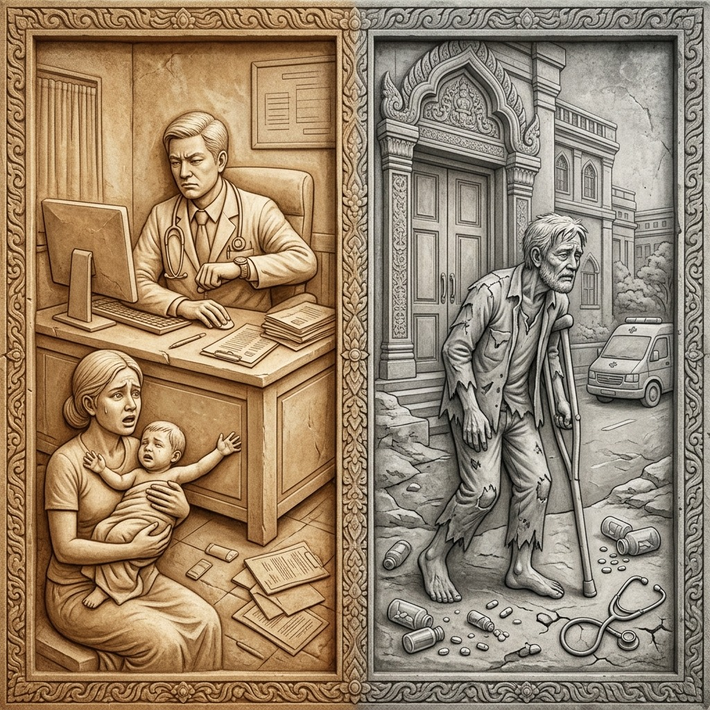
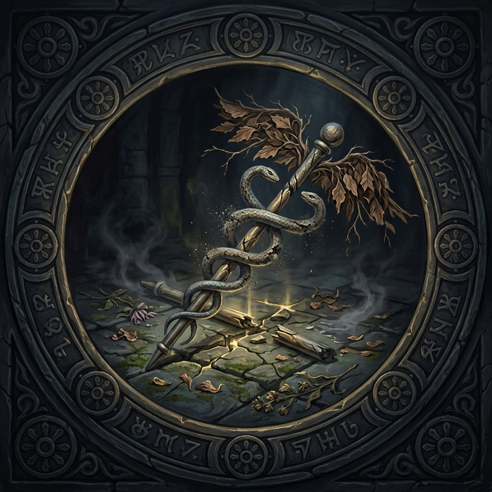
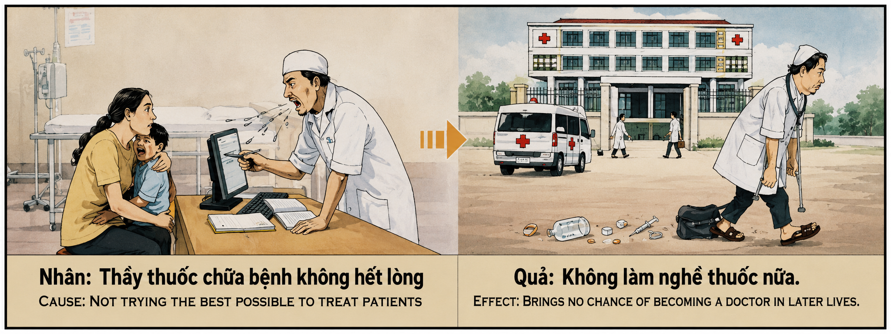

El Sanador sin Alma y la Pérdida del Don Sagrado The Soulless Healer and the Loss of the Sacred Gift Il guaritore senz'anima e la perdita del dono sacro 无灵魂的治疗师和神圣礼物的丢失 المعالج بلا روح وفقدان الهدية المقدسة Бездушный целитель и потеря священного дара Der seelenlose Heiler und der Verlust der heiligen Gabe Le guérisseur sans âme et la perte du don sacré 魂のないヒーラーと神聖な贈り物の喪失 O curador sem alma e a perda do dom sagrado Người Thầy Thuốc Vô Tâm Và Sự Mất Đi Ân Huệ Thiêng Liêng
"El don de sanar es el préstamo más sagrado que el universo concede a un alma humana. Quien lo ejerce sin amor, sin esfuerzo y sin reverencia por la vida que sostiene entre sus manos, no comete un simple error profesional: comete un sacrilegio cósmico. El karma le responde retirando el don como se retira la lluvia del desierto que la desperdicia, y en las vidas siguientes ese alma renacerá incapaz de curar, condenada a contemplar la medicina desde fuera, como un pájaro sin alas mirando el cielo." "The gift of healing is the most sacred loan the universe grants to a human soul. He who exercises it without love, without effort, and without reverence for the life he holds in his hands, does not commit a simple professional error: he commits a cosmic sacrilege. Karma responds by withdrawing the gift as rain is withdrawn from the desert that wastes it, and in subsequent lives that soul will be reborn incapable of healing, condemned to contemplate medicine from the outside, like a wingless bird gazing at the sky." "Il dono della guarigione è il prestito più sacro che l'universo concede a un'anima umana. Chi lo esercita senza amore, senza fatica e senza reverenza per la vita che tiene tra le mani, non commette un semplice errore professionale: commette un sacrilegio cosmico. Il Karma risponde ritirando il dono come si ritira la pioggia dal deserto che la devasta, e nelle vite successive quell'anima rinascerà incapace di guarire, condannata a contemplare la medicina dall'esterno, come un uccello senza ali che guarda il cielo." “治愈的恩赐是宇宙赐予人类灵魂的最神圣的贷款。如果一个人在没有爱、没有努力、没有尊重他手中的生命的情况下运用这种恩赐，他就不会犯一个简单的职业错误：他犯下了对宇宙的亵渎。业力的回应是收回这份恩赐，就像雨水从浪费它的沙漠中撤走一样，在随后的生命中，灵魂将重生，无法治愈，注定要从外部思考医学，就像一个没有翅膀的人一样。鸟儿看着天空。” "إن هدية الشفاء هي أقدس قرض يمنحه الكون للنفس البشرية. فمن يمارسها دون حب، ودون جهد، ودون تقديس للحياة التي يحملها بين يديه، لا يرتكب خطأً مهنيًا بسيطًا: فهو يرتكب تدنيسًا كونيًا. تستجيب كارما بسحب الهدية كما يُسحب المطر من الصحراء الذي يهدرها، وفي الحيوات اللاحقة ستولد تلك الروح من جديد غير قادرة على الشفاء، محكوم عليها بالتفكير في الطب من الخارج، مثل طائر بلا جناح. أنظر إلى السماء." «Дар исцеления — это самый священный кредит, который Вселенная дает человеческой душе. Тот, кто пользуется им без любви, без усилий и без почтения к жизни, которую он держит в своих руках, не совершает простой профессиональной ошибки: он совершает космическое святотатство. Карма отвечает, забирая дар, как дождь убирает из пустыни, опустошающей ее, и в последующих жизнях эта душа возродится неспособной к исцелению, обреченной созерцать лекарство извне, как бескрылый птица, смотрящая в небо». „Die Gabe der Heilung ist die heiligste Gabe, die das Universum einer menschlichen Seele gewährt. Wer sie ohne Liebe, ohne Anstrengung und ohne Ehrfurcht vor dem Leben, das er in seinen Händen hält, ausübt, begeht keinen einfachen beruflichen Fehler: Er begeht ein kosmisches Sakrileg. Karma antwortet, indem es die Gabe zurückzieht, während der Regen aus der Wüste entfernt wird, die sie verschwendet, und in späteren Leben wird diese Seele unfähig zur Heilung wiedergeboren und dazu verdammt, von außen über die Medizin nachzudenken, wie ein flügelloser Vogel, der sie betrachtet der Himmel.“ "Le don de guérison est le prêt le plus sacré que l'univers accorde à une âme humaine. Celui qui l'exerce sans amour, sans effort et sans respect pour la vie qu'il tient entre ses mains, ne commet pas une simple erreur professionnelle : il commet un sacrilège cosmique. Le Karma répond en retirant le don comme la pluie se retire du désert qui la gaspille, et dans les vies suivantes cette âme renaîtra incapable de guérir, condamnée à contempler la médecine de l'extérieur, comme un oiseau sans ailes regardant ciel." 「癒しの賜物は、宇宙が人間の魂に与える最も神聖な融資である。愛も努力もせず、自分が手にしている命への敬意もなしにそれを行使する者は、単純な職業上の誤りを犯さない。つまり、宇宙への冒涜を犯すことになる。カルマは、砂漠を荒廃させる雨が引くようにその賜物を撤回することで応じる。そしてその後の人生で、その魂は治癒不能に生まれ変わり、まるで外から医学を熟考することを宣告されるだろう」翼のない鳥が空を見上げています。」 “O dom da cura é o empréstimo mais sagrado que o universo concede à alma humana. Quem o exerce sem amor, sem esforço e sem reverência pela vida que tem nas mãos, não comete um simples erro profissional: comete um sacrilégio cósmico. para o céu." "Ân huệ chữa lành là khoản vay thiêng liêng nhất mà vũ trụ ban tặng cho một linh hồn con người. Kẻ hành nghề không có tình yêu, không nỗ lực, và không tôn kính sự sống mà mình đang nắm giữ trong tay, không phạm một sai lầm nghề nghiệp đơn thuần: kẻ ấy phạm tội báng bổ vũ trụ. Nghiệp quả đáp trả bằng cách thu hồi ân huệ như mưa rút khỏi sa mạc phung phí nó, và trong các kiếp sau linh hồn ấy sẽ tái sinh bất lực trong việc chữa lành, bị kết án nhìn y học từ bên ngoài, như chim không cánh ngước nhìn bầu trời."
Entre todos los dones que el universo puede depositar en un alma humana, el don de sanar ocupa un lugar de privilegio sagrado e inviolable. No es una habilidad ordinaria ni un oficio cualquiera: es una delegación directa de la fuerza creativa del cosmos, un fragmento de la energía primordial que sostiene la vida y la repara cuando se fractura. El médico, el curandero, el sanador —en cualquiera de sus formas a lo largo de la historia— es un canal vivo entre las fuerzas restauradoras del universo y el cuerpo frágil del ser que sufre. Cada paciente que se presenta ante él no es un «caso clínico» ni un número de expediente: es un alma envuelta en carne que deposita su confianza más absoluta —su vida misma— en las manos del que ha jurado protegerla. Esta confianza es el contrato espiritual más solemne que existe entre dos seres humanos.
Cuando un médico ejerce su profesión sin entrega, sin amor y sin el esfuerzo máximo que cada paciente merece —cuando despacha consultas con impaciencia, cuando prescribe sin escuchar, cuando trata el dolor ajeno como una molestia que interrumpe su comodidad, cuando mira la pantalla del ordenador mientras una madre desesperada sostiene a su hijo enfermo—, ese médico no está simplemente siendo negligente en términos legales: está profanando un santuario cósmico. El karma registra esta profanación con una precisión quirúrgica. El universo interpreta que el canal de sanación ha sido obstruido deliberadamente por el ego, la pereza o la indiferencia del portador, y procede a cerrarlo con la misma implacabilidad con que la tierra sella una fuente que se contamina.
La retribuzione karmica opera in due fasi devastanti. In questa stessa vita, il medico senz'anima sperimenta un deterioramento progressivo: le sue diagnosi falliscono sempre di più, le sue mani perdono la fermezza che avevano una volta, i suoi colleghi lo superano e i pazienti lo abbandonano intuitivamente, sentendo nella sua presenza una freddezza che respinge invece di consolare. La medicina, che dovrebbe essere il suo Ikigai e la sua ragione di esistere, diventa un carico sempre più pesante, finché il corpo stesso del medico inizia ad ammalarsi delle stesse patologie che non ha saputo trattare con compassione, come un eco ironico del cosmo che restituisce al mittente il dolore che non ha voluto alleviare.
En la siguiente encarnación, la retribución se amplifica exponencialmente. El alma renace con una inclinación profunda hacia la sanación —siente la vocación, sueña con curar, se conmueve ante el sufrimiento ajeno—, pero es kármicamente incapaz de ejercerla. Puede nacer con una condición física que le impide operar, con una limitación cognitiva que le cierra las puertas de la formación médica, o simplemente con una cadena interminable de circunstancias adversas que la alejan del camino de la medicina una y otra vez. Es un pájaro que nace con el recuerdo del vuelo grabado en sus alas, pero cuyas alas están rotas. La lección suprema es que el don de sanar no nos pertenece: nos es prestado por el universo con la condición sagrada de que lo usemos con todo nuestro corazón, con toda nuestra alma y con todo nuestro esfuerzo. El Ikigai del sanador solo permanece vivo cuando cada paciente es tratado como si fuera el único paciente del mundo, como si en esa consulta se jugase no un diagnóstico sino la eternidad misma de un alma.
Among all the gifts the universe can deposit in a human soul, the gift of healing occupies a place of sacred and inviolable privilege. It is not an ordinary skill or any common trade: it is a direct delegation of the creative force of the cosmos, a fragment of the primordial energy that sustains life and repairs it when it fractures. The doctor, the healer, the medicine worker—in any of their forms throughout history—is a living channel between the restorative forces of the universe and the fragile body of the being who suffers. Each patient who presents before them is not a "clinical case" or a file number: they are a soul wrapped in flesh who deposits their most absolute trust—their very life—in the hands of the one who has sworn to protect it. This trust is the most solemn spiritual contract that exists between two human beings.
When a doctor practices their profession without dedication, without love, and without the maximum effort each patient deserves—when they dispatch consultations with impatience, prescribe without listening, treat another's pain as an annoyance interrupting their comfort, stare at a computer screen while a desperate mother holds her sick child—that doctor is not simply being negligent in legal terms: they are profaning a cosmic sanctuary. Karma records this profanation with surgical precision. The universe interprets that the healing channel has been deliberately obstructed by the bearer's ego, laziness, or indifference, and proceeds to seal it with the same implacability with which the earth seals a spring that becomes contaminated.
Karmic retribution operates in two devastating phases. In this very life, the soulless doctor experiences progressive deterioration: their diagnoses fail increasingly, their hands lose the steadiness they once had, colleagues surpass them, and patients intuitively abandon them, sensing in their presence a coldness that repels rather than consoles. Medicine, which should be their Ikigai and reason for existing, becomes an increasingly heavy burden, until the doctor's own body begins to fall ill with the same ailments they failed to treat with compassion—a cosmic irony, returning to sender the pain they refused to relieve.
In the next incarnation, retribution amplifies exponentially. The soul is reborn with a deep inclination toward healing—they feel the calling, dream of curing, are moved by others' suffering—but are karmically incapable of practicing it. They may be born with a physical condition preventing them from operating, a cognitive limitation closing the doors to medical training, or simply with an endless chain of adverse circumstances pushing them away from medicine again and again. They are a bird born with the memory of flight engraved in their wings, but whose wings are broken. The supreme lesson is that the gift of healing does not belong to us: it is lent by the universe with the sacred condition that we use it with all our heart, with all our soul, and with all our effort. The healer's Ikigai only remains alive when each patient is treated as if they were the only patient in the world, as if in that consultation what is at stake is not a diagnosis but the very eternity of a soul.
Tra tutti i doni che l'universo può depositare in un'anima umana, il dono della guarigione occupa un posto di privilegio sacro e inviolabile. Non è un mestiere qualunque o un mestiere qualsiasi: è una delega diretta della forza creativa del cosmo, un frammento dell'energia primordiale che sostiene la vita e la ripara quando si spezza. Il medico, il guaritore, il guaritore – in qualsiasi sua forma nel corso della storia – è un canale vivente tra le forze riparatrici dell'universo e il fragile corpo dell'essere sofferente. Ogni paziente che gli si presenta non è un «caso clinico» o un numero di cartella: è un'anima avvolta nella carne che ripone la sua fiducia più assoluta – la sua stessa vita – nelle mani di colui che ha giurato di proteggerla. Questa fiducia è il contratto spirituale più solenne che esista tra due esseri umani.
Quando un medico esercita la sua professione senza dedizione, senza amore e senza il massimo sforzo che ogni paziente merita – quando invia consultazioni con impazienza, quando prescrive senza ascoltare, quando tratta il dolore degli altri come un inconveniente che interrompe il suo conforto, quando guarda lo schermo del computer mentre una madre disperata tiene in braccio il suo bambino malato – quel medico non è semplicemente negligente in termini legali: sta profanando un santuario cosmico. Karma registra questa profanazione con precisione chirurgica. L'universo interpreta che il canale di guarigione è stato deliberatamente bloccato dall'ego, dalla pigrizia o dall'indifferenza del portatore, e procede a chiuderlo con la stessa implacabilità con cui la terra sigilla una fontana che viene contaminata.
La retribuzione karmica opera in due fasi devastanti. In questa stessa vita, il medico senz'anima sperimenta un deterioramento progressivo: le sue diagnosi falliscono sempre di più, le sue mani perdono la fermezza che avevano una volta, i suoi colleghi lo superano e i pazienti lo abbandonano intuitivamente, sentendo nella sua presenza una freddezza che respinge invece di consolare. La medicina, che dovrebbe essere il suo Ikigai e la sua ragione di esistere, diventa un carico sempre più pesante, finché il corpo stesso del medico inizia ad ammalarsi delle stesse patologie che non ha saputo trattare con compassione, come un eco ironico del cosmo che restituisce al mittente il dolore che non ha voluto alleviare.
Nella prossima incarnazione, la punizione sarà amplificata in modo esponenziale. L'anima rinasce con una profonda inclinazione alla guarigione – sente la vocazione, sogna la guarigione, si commuove davanti alla sofferenza altrui – ma è karmicamente incapace di esercitarla. Potrebbe nascere con una condizione fisica che le impedisce di operare, con una limitazione cognitiva che chiude le porte della formazione medica, o semplicemente con una catena infinita di circostanze avverse che la allontanano ancora e ancora dal percorso della medicina. È un uccello che nasce con il ricordo del volo inciso sulle ali, ma le cui ali sono spezzate. La lezione suprema è che il dono della guarigione non ci appartiene: ci è prestato dall'universo con la sacra condizione che lo usiamo con tutto il cuore, con tutta l'anima e con tutta la nostra fatica. L'Ikigai del guaritore rimane vivo solo quando ogni paziente viene trattato come se fosse l'unico paziente al mondo, come se in quella consultazione non fosse in gioco una diagnosi ma l'eternità stessa di un'anima.
在宇宙赋予人类灵魂的所有恩赐中，治愈的恩赐占有神圣不可侵犯的地位。它不是一种普通的技能或任何工艺：它是宇宙创造力的直接代表，是维持生命并在生命破裂时修复生命的原始能量的碎片。医生、治疗师、治疗师——无论是历史上的任何形式——都是宇宙恢复力量和受苦者脆弱身体之间的活生生的通道。每一个出现在他面前的病人都不是一个“临床病例”，也不是一个档案号：他是一个被肉体包裹着的灵魂，他将自己最绝对的信任——他的生命本身——交到了发誓保护它的人手中。这种信任是两个人之间最庄严的精神契约。
当一名医生在没有奉献精神、没有爱、没有为每个病人应有的最大努力的情况下从事其职业时——当他不耐烦地进行咨询时，当他在没有倾听的情况下开出处方时，当他将他人的痛苦视为干扰他舒适的不便时，当一位绝望的母亲抱着她生病的孩子时他看着电脑屏幕时——这位医生不仅仅是在法律上的疏忽：他正在亵渎一个宇宙庇护所。业力以外科手术般的精确度记录了这种亵渎。宇宙解释说，治愈通道已被携带者的自我、懒惰或冷漠故意堵塞，并继续以与地球密封被污染的喷泉相同的无情方式关闭它。
业力报应分两个毁灭性的阶段进行。在同一生中，这位没有灵魂的医生经历着逐渐恶化的过程：他的诊断越来越失败，他的双手失去了曾经的坚定，他的同事超越了他，病人本能地抛弃了他，在他面前感受到一种令人厌恶而不是安慰的冷漠。医学，本应是他的生命贝和他存在的理由，却变成了越来越重的负担，直到医生自己的身体开始患上同样的疾病，而他不知道如何用同情心来治疗，就像宇宙的讽刺回声将他不想减轻的痛苦返回给发送者。
下一世，报应会成倍放大。灵魂重生时带着一种强烈的治愈倾向——它感受到了使命、治愈的梦想，被他人的痛苦所感动——但因业力而无法行使它。她可能生来就患有妨碍她手术的身体状况，认知限制使她无法接受医学培训，或者只是因为无尽的不利环境使她一次又一次远离医学之路。它是一只生来翅膀上刻有飞行记忆的鸟，但翅膀却折断了。最重要的教训是，治愈的恩赐不属于我们：它是宇宙借给我们的，附带一个神圣的条件，即我们要全心全意、全力以赴地使用它。只有当每个病人都被当作世界上唯一的病人来对待时，治疗师的生命贝才得以存活，就好像在那次咨询中，不是诊断，而是灵魂的永恒受到威胁。
من بين جميع المواهب التي يمكن أن يودعها الكون في النفس البشرية، تحتل موهبة الشفاء مكانًا مقدسًا لا يجوز انتهاك حرمته. إنها ليست مهارة عادية أو مجرد أي حرفة: إنها تفويض مباشر للقوة الإبداعية للكون، وهي جزء من الطاقة البدائية التي تدعم الحياة وتصلحها عندما تنكسر. الطبيب، المعالج، المعالج – في أي من أشكاله عبر التاريخ – هو قناة حية بين القوى التصالحية للكون والجسد الهش للكائن المتألم. كل مريض يظهر أمامه ليس "حالة سريرية" أو رقم ملف: إنه روح ملفوفة باللحم تضع ثقتها المطلقة -حياتها نفسها- في يد من أقسم على حمايتها. هذه الثقة هي العقد الروحي الأكثر جدية بين إنسانين.
عندما يمارس الطبيب مهنته دون تفاني، دون حب ودون أقصى جهد يستحقه كل مريض - عندما يرسل الاستشارات بفارغ الصبر، عندما يصف دون الاستماع، عندما يتعامل مع آلام الآخرين على أنها إزعاج يقطع راحته، عندما ينظر إلى شاشة الكمبيوتر بينما تحمل أم يائسة طفلها المريض - فإن هذا الطبيب لا يهمل من الناحية القانونية فحسب: إنه يدنس حرمًا كونيًا. تسجل كارما هذا التدنيس بدقة جراحية. يفسر الكون أن قناة الشفاء قد تم سدها عمدًا بسبب غرور حاملها أو كسله أو لا مبالاته، فيشرع في إغلاقها بنفس القسوة التي تغلق بها الأرض ينبوعًا يتلوث.
يعمل الانتقام الكرمي على مرحلتين مدمرتين. في هذه الحياة نفسها، يعاني الطبيب الذي لا روح له من تدهور تدريجي: تفشل تشخيصاته أكثر فأكثر، وتفقد يداه الصلابة التي كانت تتمتع بها من قبل، ويتفوق عليه زملاؤه، ويتخلى عنه المرضى بشكل حدسي، ويشعرون في حضوره ببرودة تنفر بدلاً من أن تواسي. الطب، الذي ينبغي أن يكون إيكيغاي الخاص به وسبب وجوده، يصبح عبئًا ثقيلًا بشكل متزايد، حتى يبدأ جسد الطبيب في الإصابة بنفس الأمراض التي لم يعرف كيفية علاجها بالرحمة، مثل صدى ساخر للكون يعيد إلى المرسل الألم الذي لم يرغب في تخفيفه.
في التجسد التالي، يتم تضخيم الانتقام بشكل كبير. تولد الروح من جديد بميل عميق نحو الشفاء - فهي تشعر بدعوتها، وتحلم بالشفاء، وتتأثر بمعاناة الآخرين - ولكنها غير قادرة كارميًا على ممارستها. فقد تولد بحالة بدنية تمنعها من العمل، أو بقصور إدراكي يغلق عليها أبواب التدريب الطبي، أو ببساطة بسلسلة لا نهاية لها من الظروف المعاكسة التي تمنعها من مزاولة مهنة الطب مرارا وتكرارا. إنه طائر يولد وفي جناحيه ذكرى الطيران محفورة، لكن جناحيه مكسوران. الدرس الأسمى هو أن هبة الشفاء لا تنتمي إلينا: لقد أعارها لنا الكون بشرط مقدس أن نستخدمها من كل قلبنا، ومن كل روحنا، ومن كل جهدنا. يبقى إيكيجاي المعالج على قيد الحياة فقط عندما يتم علاج كل مريض كما لو كان المريض الوحيد في العالم، كما لو أنه في تلك الاستشارة لم يكن التشخيص بل أبدية الروح على المحك.
Среди всех даров, которые Вселенная может вложить в человеческую душу, дар исцеления занимает место священной и неприкосновенной привилегии. Это не обычный навык или какое-либо ремесло: это прямое проявление творческой силы космоса, фрагмент изначальной энергии, которая поддерживает жизнь и восстанавливает ее, когда она ломается. Врач, целитель, целитель — в любой из своих форм на протяжении всей истории — является живым каналом между восстановительными силами Вселенной и хрупким телом страдающего существа. Каждый пациент, предстающий перед ним, не является «клиническим случаем» или номером дела: он — душа, окутанная плотью, которая доверяет свое самое абсолютное доверие — саму свою жизнь — в руки того, кто поклялся защищать ее. Это доверие является самым торжественным духовным контрактом, существующим между двумя людьми.
Когда врач занимается своей профессией без самоотдачи, без любви и без максимальных усилий, которых заслуживает каждый пациент, когда он нетерпеливо отправляет консультации, когда он прописывает, не слушая, когда он относится к боли других как к неудобству, лишающему его комфорта, когда он смотрит на экран компьютера, в то время как отчаявшаяся мать держит на руках своего больного ребенка, — этот врач не просто проявляет халатность с юридической точки зрения: он оскверняет космическое святилище. Карма фиксирует это осквернение с хирургической точностью. Вселенная интерпретирует, что канал исцеления был намеренно заблокирован эго, ленью или безразличием носителя, и продолжает закрывать его с той же безжалостностью, с которой земля запечатывает источник, который загрязняется.
Кармическое возмездие происходит в две разрушительные фазы. В этой же жизни бездушный врач переживает прогрессирующее ухудшение: его диагнозы все больше терпят неудачу, руки теряют прежнюю твердость, коллеги превосходят его, а пациенты интуитивно покидают его, ощущая в его присутствии холод, скорее отталкивающий, чем утешающий. Медицина, которая должна быть его икигаем и причиной его существования, становится всё более тяжёлым бременем, пока собственное тело врача не начинает заболевать теми же недугами, которые он не умел лечить с состраданием, как ироническое эхо космоса, возвращающее отправителю боль, которую он не хотел облегчать.
В следующем воплощении возмездие усиливается в геометрической прогрессии. Душа возрождается с глубокой склонностью к исцелению – она чувствует призвание, мечтает об исцелении, трогается страданиями других – но кармически неспособна осуществить это. Она может родиться с физическим состоянием, которое не позволяет ей действовать, с когнитивными ограничениями, которые закрывают двери медицинского образования, или просто с бесконечной цепью неблагоприятных обстоятельств, которые снова и снова удерживают ее от пути медицины. Это птица, рожденная с памятью о полете, запечатленной на ее крыльях, но крылья которой сломаны. Высший урок состоит в том, что дар исцеления не принадлежит нам: он одолжен нам Вселенной с тем священным условием, что мы используем его всем сердцем, всей душой и всеми усилиями. Икигай целителя остается живым только тогда, когда с каждым пациентом обращаются так, как если бы он был единственным пациентом в мире, как будто на этой консультации был поставлен не диагноз, а сама вечность души.
Unter allen Gaben, die das Universum einer menschlichen Seele hinterlassen kann, nimmt die Gabe der Heilung einen Platz heiligen und unantastbaren Privilegs ein. Es ist keine gewöhnliche Fähigkeit oder irgendein Handwerk: Es ist eine direkte Übertragung der schöpferischen Kraft des Kosmos, eines Fragments der Urenergie, die das Leben erhält und es repariert, wenn es kaputt geht. Der Arzt, der Heiler, der Heiler – in jeder seiner Formen im Laufe der Geschichte – ist ein lebendiger Kanal zwischen den wiederherstellenden Kräften des Universums und dem zerbrechlichen Körper des leidenden Wesens. Jeder Patient, der vor ihm erscheint, ist kein „klinischer Fall“ oder eine Aktennummer: Er ist eine in Fleisch gehüllte Seele, die ihr größtes Vertrauen – ihr Leben selbst – in die Hände dessen legt, der geschworen hat, es zu beschützen. Dieses Vertrauen ist der feierlichste spirituelle Vertrag, der zwischen zwei Menschen besteht.
Wenn ein Arzt seinen Beruf ohne Hingabe, ohne Liebe und ohne die größtmögliche Anstrengung ausübt, die jeder Patient verdient – wenn er ungeduldig Konsultationen aufnimmt, wenn er verschreibt, ohne zuzuhören, wenn er den Schmerz anderer als eine Unannehmlichkeit betrachtet, die sein Wohlbefinden stört, wenn er auf den Computerbildschirm schaut, während eine verzweifelte Mutter ihr krankes Kind hält – dann handelt dieser Arzt nicht nur juristisch fahrlässig, sondern entweiht ein kosmisches Heiligtum. Karma zeichnet diese Schändung mit chirurgischer Präzision auf. Das Universum interpretiert, dass der Heilungskanal absichtlich durch das Ego, die Faulheit oder die Gleichgültigkeit des Trägers blockiert wurde, und verschließt ihn mit der gleichen Unerbittlichkeit, mit der die Erde eine Quelle verschließt, die verunreinigt wird.
Karmische Vergeltung vollzieht sich in zwei verheerenden Phasen. Im selben Leben erlebt der seelenlose Arzt einen fortschreitenden Verfall: Seine Diagnosen scheitern immer mehr, seine Hände verlieren die Festigkeit, die sie einst hatten, seine Kollegen übertreffen ihn und Patienten verlassen ihn instinktiv und spüren in seiner Gegenwart eine Kälte, die eher abstößt als tröstet. Die Medizin, die sein Ikigai und sein Existenzgrund sein sollte, wird zu einer immer schwereren Last, bis der eigene Körper des Arztes an denselben Leiden zu erkranken beginnt, die er nicht mit Mitgefühl behandeln konnte, wie ein ironisches Echo des Kosmos, das dem Absender den Schmerz zurückgibt, den er nicht lindern wollte.
In der nächsten Inkarnation wird die Vergeltung exponentiell verstärkt. Die Seele wird mit einer tiefen Neigung zur Heilung wiedergeboren – sie spürt die Berufung, träumt von Heilung, wird vom Leiden anderer bewegt – ist aber karmisch unfähig, diese auszuüben. Sie kann mit einem körperlichen Zustand geboren werden, der sie daran hindert, sich einer Operation zu unterziehen, mit einer kognitiven Einschränkung, die ihr die Türen zu einer medizinischen Ausbildung versperrt, oder einfach mit einer endlosen Kette widriger Umstände, die sie immer wieder vom Weg der Medizin abhalten. Es ist ein Vogel, der mit der in seine Flügel eingravierten Erinnerung an den Flug geboren wird, dessen Flügel jedoch gebrochen sind. Die wichtigste Lektion ist, dass die Gabe der Heilung nicht uns gehört: Sie wird uns vom Universum mit der heiligen Bedingung verliehen, dass wir sie mit ganzem Herzen, mit ganzer Seele und mit all unserer Anstrengung nutzen. Das Ikigai des Heilers bleibt nur dann lebendig, wenn jeder Patient so behandelt wird, als wäre er der einzige Patient auf der Welt, als ob bei dieser Konsultation nicht eine Diagnose, sondern die Ewigkeit einer Seele auf dem Spiel stünde.
Parmi tous les dons que l'univers peut déposer dans une âme humaine, le don de guérison occupe une place de privilège sacré et inviolable. Il ne s’agit pas d’une compétence ordinaire ni d’un métier quelconque : il s’agit d’une délégation directe de la force créatrice du cosmos, d’un fragment de l’énergie primordiale qui soutient la vie et la répare lorsqu’elle se brise. Le médecin, le guérisseur, le guérisseur – sous toutes ses formes à travers l’histoire – est un canal vivant entre les forces réparatrices de l’univers et le corps fragile de l’être souffrant. Chaque patient qui se présente devant lui n'est pas un « cas clinique » ou un numéro de dossier : c'est une âme enveloppée de chair qui place sa confiance la plus absolue – sa vie elle-même – entre les mains de celui qui a juré de la protéger. Cette confiance est le contrat spirituel le plus solennel qui existe entre deux êtres humains.
Lorsqu’un médecin exerce sa profession sans dévouement, sans amour et sans le maximum d’effort que mérite chaque patient – lorsqu’il envoie des consultations avec impatience, lorsqu’il prescrit sans écouter, lorsqu’il traite la douleur des autres comme un inconvénient qui interrompt son confort, lorsqu’il regarde l’écran d’ordinateur pendant qu’une mère désespérée tient son enfant malade – ce médecin ne fait pas simplement preuve de négligence juridique : il profane un sanctuaire cosmique. Karma enregistre cette profanation avec une précision chirurgicale. L'univers interprète que le canal de guérison a été délibérément bloqué par l'ego, la paresse ou l'indifférence du porteur, et procède à sa fermeture avec le même acharnement avec lequel la terre scelle une fontaine qui se contamine.
La rétribution karmique opère en deux phases dévastatrices. Dans cette même vie, le médecin sans âme connaît une détérioration progressive : ses diagnostics échouent de plus en plus, ses mains perdent la fermeté qu'elles avaient autrefois, ses collègues le surpassent et les patients l'abandonnent intuitivement, ressentant en sa présence une froideur qui repousse plutôt que ne console. La médecine, qui devrait être son Ikigai et sa raison d'exister, devient un fardeau de plus en plus lourd, jusqu'à ce que le corps du médecin commence à tomber malade des mêmes maux qu'il ne savait pas traiter avec compassion, comme un écho ironique du cosmos rendant à l'expéditeur la douleur qu'il ne voulait pas soulager.
Dans la prochaine incarnation, le châtiment est amplifié de façon exponentielle. L'âme renaît avec une profonde inclination vers la guérison - elle ressent la vocation, rêve de guérison, est émue par la souffrance des autres - mais est karmiquement incapable de l'exercer. Elle peut naître avec une condition physique qui l’empêche d’opérer, avec une limitation cognitive qui lui ferme les portes de la formation médicale, ou simplement avec une chaîne sans fin de circonstances défavorables qui l’éloignent encore et encore du chemin de la médecine. C'est un oiseau qui naît avec le souvenir du vol gravé sur ses ailes, mais dont les ailes sont brisées. La leçon suprême est que le don de guérison ne nous appartient pas : il nous est prêté par l'univers à la condition sacrée que nous l'utilisions de tout notre cœur, de toute notre âme et de tous nos efforts. L'Ikigai du guérisseur ne reste vivant que lorsque chaque patient est traité comme s'il était le seul patient au monde, comme si dans cette consultation il s'agissait non pas d'un diagnostic mais de l'éternité même d'une âme.
宇宙が人間の魂に与えてくれるあらゆる贈り物の中でも、癒しの贈り物は神聖で不可侵の特権の地位を占めています。それは普通の技術や単なる工芸品ではありません。それは宇宙の創造力、生命を維持し、壊れたときにそれを修復する原初のエネルギーの断片を直接委任したものです。医者、治療者、治癒者は、歴史を通じてどのような形であっても、宇宙の回復力と苦しむ存在の脆弱な体との間の生きた通路です。彼の前に現れるそれぞれの患者は、「臨床症例」やファイル番号ではありません。彼は、最も絶対的な信頼を、つまり自分の命そのものを、それを守ると誓った人の手に委ねる、肉体に包まれた魂です。この信頼は、二人の人間の間に存在する最も厳粛な精神的な契約です。
医師が献身も愛もなく、各患者にふさわしい最大限の努力もせずに自分の職業を実践するとき、せっかちに診察をするとき、話を聞かずに処方するとき、他人の痛みを自分の安らぎを妨げる不都合なものとして扱うとき、絶望的な母親が病気の子供を抱きかかえながらコンピュータの画面を見つめるとき、その医師は単に法的な観点から怠慢であるだけではなく、宇宙の聖域を冒涜しているのである。カルマはこの冒涜を外科的精度で記録します。宇宙は、治癒経路がそれを保持する者のエゴ、怠惰、または無関心によって意図的に遮断されたと解釈し、地球が汚染された泉を封鎖するのと同じ容赦のなさでそれを閉鎖し始めます。
カルマの報復は 2 つの壊滅的な段階で起こります。この同じ人生の中で、魂のない医師は進行性の悪化を経験します。彼の診断はますます失敗し、彼の手はかつてのような堅さを失い、同僚は彼を追い越し、患者は直感的に彼を見捨て、彼の前では慰めるというよりも反発するような冷たさを感じます。彼の生きがいであり存在理由であるはずの医学は、ますます重荷となっていき、ついには医師自身の身体も、思いやりを持って治療する方法を知らなかった同じ病気に罹り始める。まるで、軽減したくなかった痛みを送り主に返す宇宙の皮肉なこだまのようだ。
次の転生では、報復は指数関数的に増幅されます。魂は癒しへの深い傾向を持って生まれ変わります - 使命を感じ、癒しを夢見、他人の苦しみに感動します - しかし、カルマ的にそれを行使することができません。彼女は、手術ができないような身体的疾患を持って生まれてきたり、認知機能に限界があり医学の訓練の扉を閉ざされたり、あるいは単純に、終わりのない逆境の連鎖が彼女を何度も医学の道から遠ざけたりする可能性があります。翼に飛翔の記憶を刻まれて生まれるが、翼が折れてしまう鳥。最高の教訓は、癒しの賜物は私たちに属するものではないということです。それは、私たちが心を尽くし、魂を尽くし、努力を尽くしてそれを使用するという神聖な条件のもとで、宇宙から私たちに貸し出されたものです。治療者の生きがいは、各患者があたかも自分が世界でただ一人の患者であるかのように扱われる場合にのみ生き続けます。あたかもその診察では、診断ではなく魂の永遠そのものが危険にさらされているかのように。
Entre todos os dons que o universo pode depositar na alma humana, o dom da cura ocupa um lugar de privilégio sagrado e inviolável. Não é uma habilidade comum ou qualquer ofício: é uma delegação direta da força criativa do cosmos, um fragmento da energia primordial que sustenta a vida e a repara quando ela se quebra. O médico, o curador, o curador – em qualquer uma de suas formas ao longo da história – é um canal vivo entre as forças restauradoras do universo e o corpo frágil do ser sofredor. Cada paciente que se apresenta diante dele não é um “caso clínico” ou um número de processo: é uma alma envolta em carne que deposita a sua confiança mais absoluta – a sua própria vida – nas mãos de quem jurou protegê-la. Esta confiança é o contrato espiritual mais solene que existe entre dois seres humanos.
Quando um médico exerce sua profissão sem dedicação, sem amor e sem o esforço máximo que cada paciente merece – quando despacha consultas com impaciência, quando prescreve sem ouvir, quando trata a dor dos outros como um incômodo que interrompe seu conforto, quando olha para a tela do computador enquanto uma mãe desesperada segura seu filho doente – esse médico não está sendo simplesmente negligente em termos jurídicos: está profanando um santuário cósmico. Karma registra essa profanação com precisão cirúrgica. O universo interpreta que o canal de cura foi deliberadamente bloqueado pelo ego, pela preguiça ou pela indiferença de quem o possui, e passa a fechá-lo com a mesma implacabilidade com que a terra sela uma fonte que se contamina.
A retribuição cármica opera em duas fases devastadoras. Nesta mesma vida, o médico sem alma experimenta uma deterioração progressiva: os seus diagnósticos falham cada vez mais, as suas mãos perdem a firmeza que outrora tinham, os seus colegas superam-no e os pacientes abandonam-no intuitivamente, sentindo na sua presença uma frieza que mais repele do que consola. A medicina, que deveria ser o seu Ikigai e a sua razão de existir, torna-se um fardo cada vez mais pesado, até que o próprio corpo do médico começa a adoecer com as mesmas enfermidades que ele não sabia tratar com compaixão, como um eco irônico do cosmos devolvendo ao remetente a dor que ele não queria aliviar.
Na próxima encarnação, a retribuição é amplificada exponencialmente. A alma renasce com profunda inclinação para a cura - sente a vocação, sonha com a cura, emociona-se com o sofrimento alheio - mas é carmicamente incapaz de exercê-la. Ela pode nascer com uma condição física que a impede de operar, com uma limitação cognitiva que fecha as portas da formação médica, ou simplesmente com uma cadeia interminável de circunstâncias adversas que a afastam continuamente do caminho da medicina. É um pássaro que nasce com a memória do voo gravada nas asas, mas cujas asas estão quebradas. A lição suprema é que o dom da cura não nos pertence: ele nos é emprestado pelo universo com a sagrada condição de que o utilizemos com todo o coração, com toda a alma e com todo o esforço. O Ikigai do curador só permanece vivo quando cada paciente é tratado como se fosse o único paciente do mundo, como se naquela consulta não estivesse em jogo um diagnóstico, mas a própria eternidade de uma alma.
Trong tất cả ân huệ mà vũ trụ có thể đặt vào một linh hồn con người, ân huệ chữa lành chiếm một vị trí đặc quyền thiêng liêng và bất khả xâm phạm. Đó không phải kỹ năng bình thường hay nghề nghiệp tầm thường: đó là sự ủy thác trực tiếp từ sức mạnh sáng tạo của vũ trụ, một mảnh vỡ của năng lượng nguyên thủy duy trì sự sống và sửa chữa khi nó gãy vỡ. Người thầy thuốc, thầy lang, người chữa lành — dưới bất kỳ hình thức nào xuyên suốt lịch sử — là kênh sống giữa các lực phục hồi của vũ trụ và thân xác mong manh của chúng sinh đau khổ. Mỗi bệnh nhân không phải là «ca lâm sàng» hay số hồ sơ: họ là một linh hồn bọc trong xương thịt giao phó niềm tin tuyệt đối nhất — chính sự sống — vào bàn tay người đã thề bảo vệ nó. Niềm tin này là khế ước tâm linh trang trọng nhất giữa hai con người.
Khi người thầy thuốc hành nghề không cống hiến, không yêu thương và không nỗ lực tối đa mà mỗi bệnh nhân xứng đáng — khi họ đuổi bệnh nhân bằng sự thiếu kiên nhẫn, kê toa mà không lắng nghe, coi nỗi đau người khác như phiền toái gián đoạn sự thoải mái, nhìn chằm chằm màn hình máy tính trong khi người mẹ tuyệt vọng ôm con ốm — người thầy thuốc đó không đơn giản là cẩu thả theo luật pháp: họ đang xúc phạm một thánh đường vũ trụ. Nghiệp quả ghi nhận sự xúc phạm này với độ chính xác phẫu thuật. Vũ trụ hiểu rằng kênh chữa lành đã bị cố tình tắc nghẽn bởi cái tôi, sự lười biếng hoặc thờ ơ của người mang nó, và tiến hành niêm phong với sự tàn nhẫn như đất bịt kín con suối bị ô nhiễm.
Nghiệp quả hoạt động qua hai giai đoạn tàn khốc. Ngay trong kiếp này, người thầy thuốc vô tâm trải nghiệm sự suy thoái tiến triển: chẩn đoán ngày càng sai, đôi tay mất đi sự vững vàng, đồng nghiệp vượt qua, và bệnh nhân trực giác rời bỏ, cảm nhận sự lạnh lẽo xua đuổi thay vì an ủi. Y học, đáng lẽ là Ikigai và lý do tồn tại, trở thành gánh nặng ngày càng đè nén, cho đến khi chính thân xác người thầy thuốc bắt đầu mắc những căn bệnh mà họ đã không chữa trị bằng lòng trắc ẩn — tiếng vọng mỉa mai của vũ trụ trả lại người gửi nỗi đau mà họ từ chối xoa dịu.
Trong kiếp sau, nghiệp quả được khuếch đại theo cấp số nhân. Linh hồn tái sinh với khuynh hướng sâu sắc hướng về chữa lành — cảm nhận thiên chức, mơ chữa bệnh, xúc động trước đau khổ — nhưng bất lực về mặt nghiệp quả để thực hành. Có thể sinh ra với tình trạng thể chất ngăn cản phẫu thuật, hạn chế nhận thức đóng cánh cửa đào tạo y khoa, hoặc đơn giản với chuỗi bất tận hoàn cảnh bất lợi đẩy họ xa y học mãi mãi. Họ là con chim sinh ra với ký ức bay khắc trên đôi cánh, nhưng đôi cánh đã gãy. Bài học tối thượng là ân huệ chữa lành không thuộc về chúng ta: nó được vũ trụ cho vay với điều kiện thiêng liêng rằng chúng ta sử dụng bằng tất cả trái tim, tất cả linh hồn và tất cả nỗ lực. Ikigai của người chữa lành chỉ còn sống khi mỗi bệnh nhân được đối xử như thể là bệnh nhân duy nhất trên thế giới, như thể trong cuộc khám đó đang đặt cược không phải chẩn đoán mà là vĩnh cửu của một linh hồn.
Las Manos de Barro y el Río de Lágrimas
The Hands of Clay and the River of Tears
Le mani d'argilla e il fiume di lacrime
粘土之手与泪河
أيدي الطين ونهر الدموع
Руки из глины и река слез
Die Hände aus Ton und der Fluss der Tränen
Les mains d'argile et la rivière des larmes
粘土の手と涙の川
As mãos de barro e o rio de lágrimas
Đôi Bàn Tay Đất Sét Và Dòng Sông Nước Mắt
En la próspera ciudad portuaria de Haoran, donde los juncos de velas rojas surcaban la bahía al atardecer y los templos de piedra caliza se erguían sobre las colinas como centinelas de incienso, vivía el doctor Zheng Weimin, el médico más prestigioso y solicitado de toda la provincia. Zheng Weimin había heredado de su padre, el legendario doctor Zheng Hao, una clínica de tres pisos con techos de jade verde, una biblioteca médica con más de mil pergaminos de herbolaria antigua y, sobre todo, un linaje de sanadores que se remontaba siete generaciones hasta un ancestro que, según la leyenda, había curado a un emperador moribundo con una infusión de flores de loto nocturno. Los pacientes recorrían distancias enormes para ser atendidos por Zheng Weimin: viajaban durante semanas en carretas desde las montañas, cruzaban ríos en balsas improvisadas, vendían sus últimas pertenencias para pagar la consulta. No venían solo por su reputación técnica, sino porque su padre, Zheng Hao, había sido un médico de compasión legendaria que jamás cobraba a quien no podía pagar y que lloraba con sus pacientes cuando no lograba salvarlos.
Pero Zheng Weimin no era su padre. En los primeros años, cuando el peso de la responsabilidad aún lo mantenía humilde, atendía con diligencia y ternura. Sin embargo, a medida que la fama crecía y las monedas de oro se apilaban en sus arcones, algo se fue secando lentamente dentro de él, como un manantial que pierde su fuente subterránea. Comenzó a ver a los pacientes no como almas que sufrían, sino como interrupciones de su comodidad. Las consultas que antes duraban una hora se redujeron a minutos. Dejó de examinar a los enfermos con las manos y empezó a prescribir recetas desde detrás de su escritorio sin siquiera mirarlos a los ojos. Cuando una madre angustiada le traía a un niño con fiebre alta, Zheng Weimin la despachaba con una receta genérica y un gesto de impaciencia, mientras miraba el reloj de arena y calculaba cuántos pacientes más podía facturar antes del almuerzo. Las lágrimas de los pacientes le molestaban. Sus súplicas le irritaban. Su dolor era un ruido de fondo que interfería con la tranquilidad de su vida opulenta.
Una noche de invierno, en plena temporada de lluvias, una campesina llamada Lien llegó a la clínica cargando en brazos a su hija Suyin, una niña de siete años que ardía de fiebre y cuya respiración se había convertido en un silbido agónico. Lien había caminado tres días bajo la lluvia, sin comer, con los pies descalzos destrozados por los caminos de piedra, vendiendo su único anillo de bodas para reunir el dinero de la consulta. Cuando finalmente llegó ante Zheng Weimin, empapada y temblando, le suplicó de rodillas que examinara a su hija. Zheng Weimin, que estaba terminando su té de jazmín vespertino, miró a la niña con fastidio, le tomó el pulso durante exactamente tres segundos, y dictaminó: «Fiebre común. Dele esta infusión tres veces al día.» Lien, con la voz quebrada, le rogó: «Doctor, por favor, mírela bien, su respiración no es normal, algo le oprime el pecho, se lo suplico con toda mi alma.» Zheng Weimin, irritado por la insistencia, elevó la voz: «¿Cree usted que sabe más medicina que yo? He dicho que es fiebre común. Siguiente paciente.» Lien fue empujada fuera de la consulta por el asistente.
Tres noches después, en el camino de regreso a su aldea, bajo una lluvia torrencial y sin refugio, la pequeña Suyin dejó de respirar en los brazos de su madre. Lo que tenía no era fiebre común: era una infección pulmonar que, detectada a tiempo, se habría curado con una simple cataplasma de hierbas medicinales que Zheng Weimin tenía en abundancia en su botica. Tres segundos de pulso. Tres segundos de indiferencia. Tres segundos que le costaron la vida a una niña de siete años. Lien enterró a su hija bajo un cerezo silvestre en la ladera de la montaña y regresó a su aldea como una sombra vacía, sin voz, sin lágrimas, con los ojos abiertos hacia una nada que nunca terminaba.
El karma comenzó su labor silenciosa e implacable. En los meses siguientes, las manos de Zheng Weimin empezaron a temblar de manera inexplicable. Al principio fue un ligero temblor al sostener los pinceles de caligrafía para escribir recetas, pero pronto se extendió a los instrumentos de acupuntura, que ya no lograba insertar con precisión. Sus diagnósticos se volvieron erráticos: confundía síntomas básicos, prescribía hierbas equivocadas, cometía errores que un aprendiz de primer año habría evitado. Los pacientes comenzaron a abandonarlo. Los que antes recorrían semanas para consultarle ahora lo evitaban y buscaban a médicos de aldeas remotas. Su clínica de tres pisos se fue vaciando hasta que el silencio se instaló en los pasillos como polvo en una tumba abierta. Una mañana, Zheng Weimin despertó con un dolor fulminante en ambas piernas que ningún remedio lograba aliviar: la misma dolencia misteriosa que él había despachado tantas veces sin examinar. En pocos meses, sus piernas se atrofiaron hasta dejarlo dependiente de una muleta. Ya no podía permanecer de pie el tiempo necesario para examinar a un paciente. El último médico de siete generaciones de sanadores legendarios cerraba su clínica para siempre, arrastrándose fuera del edificio que su padre había construido con amor, rodeado de frascos de medicina rotos que se caían de sus estantes como si el propio edificio llorara.
En su siguiente vida, Zheng Weimin renació como un joven llamado Khanh en un pueblo pesquero remoto. Desde que tuvo uso de razón, Khanh sintió un impulso irresistible y doloroso hacia la sanación: se conmovía hasta las lágrimas cuando un animal herido gemía en el camino, preparaba instintivamente cataplasmas de hierbas para los pescadores cortados por las redes, y soñaba cada noche con un edificio de techos verdes donde hileras de enfermos esperaban a que él los curara. Pero el destino kármico le cerraba todas las puertas. Sus padres no tenían dinero para enviarlo a la escuela de medicina. Cuando finalmente consiguió una beca por méritos, una inundación destruyó el edificio de la academia el día antes de su ingreso. Intentó aprender como aprendiz de un herborista local, pero sus manos temblaban inexplicablemente cada vez que intentaba preparar una fórmula medicinal, como si una fuerza invisible le impidiera completar el gesto de curar. Un día, mientras vagaba desolado por los muelles, Khanh encontró a una anciana pescadora tendida en el suelo, inconsciente, con la piel azulada por el frío. Nadie se detenía a ayudarla. Khanh se arrodilló junto a ella, se quitó su único abrigo para cubrirla, la abrazó para darle calor con su propio cuerpo, y con las manos temblorosas le masajeó el pecho durante horas, hablándole al oído con una ternura que no sabía de dónde venía: «No te vayas, abuela, quédate conmigo, no voy a dejarte sola.» Cuando la anciana abrió los ojos y le sonrió, Khanh sintió que algo se desbloqueaba en lo más profundo de su alma, como una compuerta oxidada que comienza a abrirse después de décadas sellada. Esa noche, por primera vez, sus manos no temblaron cuando preparó una infusión de jengibre para la anciana. Una grieta minúscula se había abierto en el muro kármico que le impedía sanar: no porque hubiera demostrado habilidad técnica, sino porque por primera vez en dos vidas había puesto todo su corazón, toda su alma y todo su esfuerzo en salvar a un solo ser humano, sin mirar el reloj, sin calcular el precio, sin desear estar en otro lugar. Había tratado a aquella anciana como si fuera la única paciente del mundo. Y en el universo del karma, eso era exactamente lo que el don de sanar siempre había exigido.
In the prosperous port city of Haoran, where red-sailed junks crossed the bay at sunset and limestone temples rose upon the hills like sentinels of incense, there lived Doctor Zheng Weimin, the most prestigious and sought-after physician in the entire province. Zheng Weimin had inherited from his father, the legendary Doctor Zheng Hao, a three-story clinic with jade-green roofs, a medical library with over a thousand scrolls of ancient herbalism, and above all, a lineage of healers stretching back seven generations to an ancestor who, according to legend, had cured a dying emperor with an infusion of nocturnal lotus flowers. Patients traveled enormous distances to be treated by Zheng Weimin: they journeyed for weeks in carts from the mountains, crossed rivers on makeshift rafts, sold their last belongings to pay for a consultation. They came not only for his technical reputation, but because his father, Zheng Hao, had been a physician of legendary compassion who never charged those who could not pay and who wept with his patients when he could not save them.
But Zheng Weimin was not his father. In the early years, when the weight of responsibility still kept him humble, he attended with diligence and tenderness. However, as fame grew and gold coins piled in his coffers, something slowly dried within him, like a spring losing its underground source. He began to see patients not as souls who suffered, but as interruptions to his comfort. Consultations that once lasted an hour shrank to minutes. He stopped examining the sick with his hands and began prescribing from behind his desk without even looking them in the eye. When an anxious mother brought a child with high fever, Zheng Weimin dispatched her with a generic prescription and a gesture of impatience, while watching the hourglass and calculating how many more patients he could bill before lunch. Patients' tears annoyed him. Their pleas irritated him. Their pain was background noise interfering with the tranquility of his opulent life.
One winter night, in the heart of the rainy season, a peasant woman named Lien arrived at the clinic carrying in her arms her daughter Suyin, a seven-year-old girl burning with fever whose breathing had become an agonizing whistle. Lien had walked three days in the rain, without eating, her bare feet destroyed by the stone roads, having sold her only wedding ring to gather the consultation fee. When she finally stood before Zheng Weimin, soaked and trembling, she begged on her knees for him to examine her daughter. Zheng Weimin, who was finishing his evening jasmine tea, looked at the child with annoyance, took her pulse for exactly three seconds, and pronounced: 'Common fever. Give her this infusion three times a day.' Lien, her voice breaking, pleaded: 'Doctor, please, look at her carefully, her breathing is not normal, something is pressing on her chest, I beg you with all my soul.' Zheng Weimin, irritated by her insistence, raised his voice: 'Do you think you know more medicine than I? I said it is common fever. Next patient.' Lien was pushed out of the consultation by the assistant.
Three nights later, on the road back to her village, under torrential rain and without shelter, little Suyin stopped breathing in her mother's arms. What she had was not common fever: it was a pulmonary infection that, detected in time, would have been cured with a simple poultice of medicinal herbs that Zheng Weimin had in abundance in his pharmacy. Three seconds of pulse. Three seconds of indifference. Three seconds that cost a seven-year-old girl her life. Lien buried her daughter beneath a wild cherry tree on the mountainside and returned to her village as an empty shadow, without voice, without tears, her eyes open toward a nothingness that never ended.
Karma began its silent and implacable work. In the following months, Zheng Weimin's hands began to tremble inexplicably. At first it was a slight tremor when holding calligraphy brushes to write prescriptions, but soon it spread to acupuncture instruments, which he could no longer insert with precision. His diagnoses became erratic: he confused basic symptoms, prescribed wrong herbs, made errors a first-year apprentice would have avoided. Patients began abandoning him. Those who once traveled weeks to consult him now avoided him and sought physicians in remote villages. His three-story clinic emptied until silence settled in the corridors like dust in an open tomb. One morning, Zheng Weimin awoke with a searing pain in both legs that no remedy could relieve: the same mysterious ailment he had dismissed so many times without examining. Within months, his legs atrophied until he was dependent on a crutch. He could no longer stand long enough to examine a patient. The last doctor of seven generations of legendary healers closed his clinic forever, dragging himself out of the building his father had built with love, surrounded by broken medicine bottles falling from their shelves as if the building itself were weeping.
In his next life, Zheng Weimin was reborn as a young man named Khanh in a remote fishing village. From the moment he gained awareness, Khanh felt an irresistible and painful impulse toward healing: he was moved to tears when a wounded animal whimpered on the road, instinctively prepared herb poultices for fishermen cut by nets, and dreamed every night of a building with green roofs where rows of sick people waited for him to cure them. But karmic destiny closed every door. His parents had no money to send him to medical school. When he finally secured a merit scholarship, a flood destroyed the academy building the day before his enrollment. He tried to learn as an apprentice to a local herbalist, but his hands trembled inexplicably every time he attempted to prepare a medicinal formula, as if an invisible force prevented him from completing the gesture of healing. One day, while wandering desolately through the docks, Khanh found an elderly fisherwoman lying on the ground, unconscious, her skin blue from the cold. No one stopped to help her. Khanh knelt beside her, removed his only coat to cover her, embraced her to give warmth with his own body, and with trembling hands massaged her chest for hours, whispering in her ear with a tenderness whose origin he did not know: 'Don't go, grandmother, stay with me, I won't leave you alone.' When the old woman opened her eyes and smiled at him, Khanh felt something unblock in the deepest part of his soul, like a rusted floodgate beginning to open after decades sealed shut. That night, for the first time, his hands did not tremble when he prepared a ginger infusion for the old woman. A tiny crack had opened in the karmic wall that prevented him from healing: not because he had demonstrated technical skill, but because for the first time in two lifetimes he had poured his entire heart, his entire soul, and his entire effort into saving a single human being, without watching the clock, without calculating the price, without wishing to be elsewhere. He had treated that old woman as if she were the only patient in the world. And in the universe of karma, that was exactly what the gift of healing had always demanded.
Nella prospera città portuale di Haoran, dove le giunche dalle vele rosse attraversavano la baia al tramonto e i templi calcarei si ergevano sulle colline come sentinelle di incenso, viveva il dottor Zheng Weimin, il medico più prestigioso e ricercato dell'intera provincia. Zheng Weimin aveva ereditato da suo padre, il leggendario dottor Zheng Hao, una clinica a tre piani con tetti di giada verde, una biblioteca medica con più di mille pergamene di antica erboristeria e, soprattutto, un lignaggio di guaritori che risaliva a sette generazioni fino a un antenato che, secondo la leggenda, aveva curato un imperatore morente con un infuso di fiori di loto notturno. I pazienti percorrevano enormi distanze per farsi curare da Zheng Weimin: viaggiavano per settimane su carri provenienti dalle montagne, attraversavano fiumi su zattere improvvisate, vendevano i loro ultimi averi per pagare la visita. Venivano non solo per la sua reputazione tecnica, ma perché suo padre, Zheng Hao, era stato un medico dalla compassione leggendaria che non faceva mai pagare nessuno che non poteva pagare e che piangeva con i suoi pazienti quando non riusciva a salvarli.
Ma Zheng Weimin non era suo padre. Nei primi anni, quando il peso delle responsabilità lo teneva ancora umile, servì con diligenza e tenerezza. Tuttavia, man mano che la sua fama cresceva e le monete d'oro si accumulavano nel suo petto, qualcosa lentamente si seccò dentro di lui, come una sorgente che perde la sua fonte sotterranea. Cominciò a vedere i pazienti non come anime sofferenti, ma come interruzioni del suo conforto. Le consultazioni che prima duravano un’ora si sono ridotte a minuti. Smise di esaminare i malati con le mani e cominciò a prescrivere ricette stando dietro la scrivania, senza nemmeno guardarli negli occhi. Quando una madre sconvolta portava un bambino con la febbre alta, Zheng Weimin la congedava con una prescrizione generica e un gesto impaziente, mentre guardava la clessidra e calcolava a quanti altri pazienti avrebbe potuto fatturare prima di pranzo. Le lacrime dei pazienti lo infastidivano. Le loro suppliche lo irritavano. Il suo dolore era un rumore di fondo che interferiva con la tranquillità della sua vita opulenta.
Una notte d'inverno, nel pieno della stagione delle piogge, una contadina di nome Lien arrivò alla clinica portando con sé sua figlia Suyin, una bambina di sette anni che bruciava di febbre e il cui respiro era diventato un sibilo agonizzante. Lien aveva camminato per tre giorni sotto la pioggia, senza mangiare, con i piedi nudi distrutti dai sentieri di pietra, vendendo la sua unica fede nuziale per raccogliere i soldi per la consultazione. Quando finalmente arrivò davanti a Zheng Weimin, fradicia e tremante, lo pregò in ginocchio di esaminare sua figlia. Zheng Weimin, che stava finendo il suo tè pomeridiano al gelsomino, guardò la ragazza con fastidio, le prese il polso per tre secondi esatti e sentì: "Febbre comune. Dia questa infusione tre volte al giorno. Lien, con voce rotta, lo pregò: "Dottore, per favore la guardi attentamente, il suo respiro non è normale, qualcosa le preme sul petto, la prego con tutta l'anima." Zheng Weimin, irritato dall'insistenza, alzò la voce: "Pensi di sapere più medicine di me? Ho detto che è febbre comune. Il prossimo paziente." Lien fu spinto fuori dall'ufficio dall'assistente.
Tre notti dopo, sulla via del ritorno al suo villaggio, sotto una pioggia battente e senza riparo, la piccola Suyin ha smesso di respirare tra le braccia di sua madre. Quella che aveva non era una comune febbre: si trattava di un'infezione polmonare che, rilevata in tempo, sarebbe stata curata con un semplice impiastro di erbe medicinali che Zheng Weimin aveva in abbondanza nella sua farmacia. Tre secondi di impulso. Tre secondi di indifferenza. Tre secondi che costarono la vita a una bambina di sette anni. Lien seppellì sua figlia sotto un ciliegio selvatico sul fianco della montagna e ritornò al suo villaggio come un'ombra vuota, senza voce, senza lacrime, con gli occhi aperti verso un nulla che non finiva mai.
Il Karma iniziò il suo lavoro silenzioso e implacabile. Nei mesi successivi, le mani di Zheng Weimin iniziarono a tremare inspiegabilmente. All'inizio era un leggero tremore quando impugnavo i pennelli da calligrafia per scrivere le ricette, ma presto si è diffuso agli strumenti per l'agopuntura, che non riuscivo più a inserire con precisione. Le sue diagnosi divennero incostanti: confuse i sintomi di base, prescrisse le erbe sbagliate, commise errori che un tirocinante del primo anno avrebbe evitato. I pazienti iniziarono ad abbandonarlo. Coloro che in precedenza avevano viaggiato settimane per consultarlo, ora lo evitavano e cercavano medici in villaggi remoti. La sua clinica a tre piani si svuotò finché il silenzio non si posò nei corridoi come la polvere in una tomba aperta. Una mattina, Zheng Weimin si svegliò con un dolore devastante a entrambe le gambe che nessun rimedio poteva alleviare: lo stesso misterioso disturbo che tante volte aveva respinto senza esaminarlo. Nel giro di pochi mesi, le sue gambe si atrofizzarono fino a diventare dipendente da una stampella. Non poteva più stare in piedi abbastanza a lungo per esaminare un paziente. L'ultimo medico di sette generazioni di guaritori leggendari stava chiudendo per sempre la sua clinica, strisciando fuori dall'edificio che suo padre aveva amorevolmente costruito, circondato da flaconi di medicinali rotti che cadevano dagli scaffali come se l'edificio stesso stesse piangendo.
Nella sua vita successiva, Zheng Weimin rinacque come un giovane di nome Khanh in un remoto villaggio di pescatori. Da quando riusciva a ricordare, Khanh sentiva un impulso irresistibile e doloroso verso la guarigione: si commuoveva fino alle lacrime quando un animale ferito gemeva sulla strada, preparava istintivamente cataplasmi di erbe per i pescatori tagliati dalle reti e sognava ogni notte un edificio dal tetto verde dove file di malati aspettavano che lui li curasse. Ma il destino karmico gli ha chiuso tutte le porte. I suoi genitori non avevano i soldi per mandarlo alla facoltà di medicina. Quando finalmente ottenne una borsa di studio per merito, un'alluvione distrusse l'edificio dell'accademia il giorno prima della sua ammissione. Tentò di diventare apprendista presso un erborista locale, ma le sue mani tremavano inspiegabilmente ogni volta che tentava di preparare una formula medicinale, come se una forza invisibile gli impedisse di completare il gesto curativo. Un giorno, mentre vagava desolatamente lungo il molo, Khanh trovò una vecchia pescatrice stesa a terra, priva di sensi, con la pelle bluastra per il freddo. Nessuno si è fermato per aiutarla. Khanh si inginocchiò accanto a lei, si tolse l'unico cappotto per coprirla, l'abbracciò per scaldarla con il proprio corpo, e con mani tremanti le massaggiò il petto per ore, parlandole all'orecchio con una tenerezza che non sapeva da dove venisse: "Non andare, nonna, resta con me, non ti lascerò sola". Quando la vecchia aprì gli occhi e gli sorrise, Khanh sentì qualcosa aprirsi nel profondo della sua anima, come una chiusa arrugginita che cominciava ad aprirsi dopo decenni sigillata. Quella notte, per la prima volta, le sue mani non tremarono mentre preparava il tè allo zenzero per la vecchia. Una minuscola crepa si era aperta nel muro karmico che gli impediva di guarire: non perché avesse dimostrato abilità tecnica, ma perché per la prima volta in due vite aveva messo tutto il suo cuore, tutta la sua anima e tutti i suoi sforzi per salvare un singolo essere umano, senza guardare l'orologio, senza calcolarne il costo, senza desiderare di essere altrove. Aveva trattato quella vecchia come se fosse l'unica malata al mondo. E nell'universo del karma, questo era esattamente ciò che il dono della guarigione aveva sempre richiesto.
在繁华的港口城市浩然，黄昏时红帆横渡海湾，石灰岩寺庙如香火哨兵般矗立在山岗上，住着全省最负盛名、最受追捧的医生郑伟民医生。郑为民从他的父亲传奇医生郑浩那里继承了一座绿玉屋顶的三层诊所、一座拥有一千多卷古本草卷轴的医学图书馆，最重要的是，他继承了一个可以追溯到七代人的祖先的医家血统，据传说，他用夜莲花的输液治愈了一位垂死的皇帝。病人不远千里前来接受郑为民的治疗：他们从山上坐车，花了数周的时间，乘着简易木筏渡河，卖掉最后的财产来支付看诊费用。他们的到来不仅是因为他在技术上的声誉，还因为他的父亲郑浩是一位传奇般的慈悲医生，他从不向付不起费用的人收费，当他救不了病人时，他会和病人一起哭泣。
但郑伟民不是他的父亲。早年，当责任的重担让他保持谦虚的时候，他就勤勤恳恳、温柔地服务。然而，随着他的名气越来越大，胸口里的金币越来越多，他体内的某种东西慢慢干涸，就像失去了地下源泉的泉水一样。他开始不再将病人视为受苦的灵魂，而是将其视为对他安慰的干扰。之前持续一个小时的咨询被缩短为几分钟。他不再用手检查病人，而是开始在办公桌后面开处方，甚至不看病人的眼睛。当一位心烦意乱的母亲带着一个发高烧的孩子时，郑伟民会用通用处方和不耐烦的姿势打发她，同时看着沙漏，计算着午餐前他还能给多少病人收费。病人的眼泪让他心烦意乱。他们的恳求激怒了他。他的痛苦就像背景噪音，干扰了他富裕生活的宁静。
一个冬天的夜晚，正值雨季，一位名叫连恩的农妇带着她七岁的女儿素音来到诊所。 素音是个七岁的小女孩，她高烧不退，呼吸也变成了痛苦的嘶嘶声。连在雨中走了三天，没有吃东西，赤脚被石板路磨坏了，卖掉了唯一的结婚戒指来筹集咨询费用。当她终于来到郑伟民面前时，浑身湿透，瑟瑟发抖，跪求郑伟民给她的女儿检查一下。喝完下午茉莉花茶的郑为民懊恼地看着女孩，把脉足足有三秒，判了道：“普通发烧，一天输三次。连连声音沙哑地恳求道：“医生，请你仔细看看她，她的呼吸不正常，胸口有东西压着，我拼命求你。”郑为民被她的坚持激怒了，提高了声音：“你认为吗？”你懂的药比我多吗？我说的是普通发烧。下一个病人。”连恩被助理推出了办公室。
三天后的晚上，在回村的路上，大雨倾盆，没有遮风挡雨的地方，小素音在妈妈的怀里停止了呼吸。他得的不是普通的发烧，而是肺部感染，如果及时发现，用郑伟民药房里备有的简单药膏就能治愈。三秒脉搏。三秒的冷漠。三秒钟就夺走了一名七岁女孩的生命。连恩将女儿埋在山腰的一棵野樱桃树下，然后以一个空虚的影子回到了自己的村庄，没有声音，没有眼泪，睁着眼睛，望向永远没有尽头的虚无。
业力开始了它无声无息的工作。接下来的几个月里，郑伟民的双手开始莫名地颤抖。起初是拿着毛笔写菜谱时有轻微的颤抖，但很快就蔓延到针灸仪器上，我已经无法准确插入了。他的诊断变得不稳定：他混淆了基本症状，开出了错误的草药，犯了第一年学员本可以避免的错误。病人开始抛弃他。那些以前长途跋涉数周来向他咨询的人现在避开了他，转而到偏远的村庄寻找医生。他的三层诊所空无一人，直到走廊里一片寂静，就像敞开的坟墓里的灰尘一样。一天早上，郑伟民醒来时感到双腿剧痛，无法缓解：同样的神秘疾病，他多次未经检查就被忽视了。几个月之内，他的双腿萎缩，直到只能依靠拐杖行走。他再也无法站立足够长的时间来检查病人。七代传奇治疗师的最后一位医生将永远关闭他的诊所，他从他父亲精心建造的大楼里爬出来，周围都是从架子上掉下来的破碎药瓶，仿佛大楼本身在哭泣。
下一世，郑伟民重生为一个偏远渔村的年轻人，名叫Khanh。从记事起，Khanh就感受到了一种不可抗拒的、痛苦的治愈冲动：当一只受伤的动物在路上呻吟时，他感动得流下了眼泪；他本能地为被网割伤的渔民准备了草药膏；他每天晚上都梦想着一座绿色屋顶的建筑，里面一排排病人等待他治疗。但业力的命运向他关闭了所有大门。他的父母没有钱送他去医学院。当他最终获得优异奖学金时，入学前一天洪水摧毁了学院大楼。他尝试向当地草药师拜师，但每次尝试配制药方时，他的双手都会莫名地颤抖，仿佛有一股无形的力量阻止他完成治疗动作。有一天，当他沿着码头凄凉地闲逛时，Khanh 发现一位老渔妇躺在地上，不省人事，皮肤冻得发紫。没有人停下来帮助她。 Khanh跪在她身边，脱下唯一的外套盖住她，用自己的身体抱住她取暖，用颤抖的手按摩着她的胸口，按摩了好几个小时，在她耳边说着不知从何而来的温柔：“别走，奶奶，和我在一起，我不会丢下你一个人。”当老妇人睁开眼睛并对他微笑时，汗感到自己灵魂深处的某种东西被释放了，就像一扇锈迹斑斑的闸门在封闭了几十年后开始打开。那天晚上，她第一次为老妇人准备姜茶时，双手没有颤抖。业力墙上出现了一道微小的裂缝，阻止了他的治愈：不是因为他表现出了技术能力，而是因为他两世以来第一次全身心、全部灵魂和全部努力去拯救一个人，不看时钟，不计算成本，也不希望自己在其他地方。他对待那个老妇人就好像她是世界上唯一的病人一样。在业力的宇宙中，这正是治愈天赋一直所要求的。
في مدينة هاوران الساحلية المزدهرة، حيث أبحرت سفن الينك ذات الأشرعة الحمراء عبر الخليج عند الغسق، وكانت المعابد المصنوعة من الحجر الجيري تقف على التلال مثل حراس البخور، عاش الدكتور تشنغ ويمين، الطبيب الأكثر شهرة والأكثر رواجًا في المقاطعة بأكملها. كان تشنغ ويمين قد ورث عن والده الطبيب الأسطوري تشنغ هاو، عيادة من ثلاثة طوابق ذات أسطح من اليشم الأخضر، ومكتبة طبية تحتوي على أكثر من ألف مخطوطة من الأعشاب القديمة، وفي المقام الأول، سلالة من المعالجين تمتد إلى سبعة أجيال إلى سلف كان، وفقاً للأسطورة، قد عالج إمبراطوراً يحتضر بحقنه من زهور اللوتس الليلية. كان المرضى يسافرون مسافات هائلة لتلقي العلاج على يد تشنغ ويمين: فقد سافروا لأسابيع في عربات من الجبال، وعبروا الأنهار على قوارب مرتجلة، وباعوا آخر ممتلكاتهم لدفع تكاليف الاستشارة. لقد جاءوا ليس فقط بسبب سمعته الفنية، ولكن لأن والده، تشنغ هاو، كان طبيبًا ذو تعاطف أسطوري ولم يتقاضى أبدًا أي شخص لا يستطيع الدفع وكان يبكي مع مرضاه عندما لا يستطيع إنقاذهم.
لكن تشنغ ويمين لم يكن والده. في السنوات الأولى، عندما كان ثقل المسؤولية لا يزال يبقيه متواضعا، كان يخدم باجتهاد وحنان. ومع ذلك، مع ازدياد شهرته وتراكم العملات الذهبية في صدره، جف شيء بداخله ببطء، مثل فقدان النبع لمنبعه تحت الأرض. بدأ يرى المرضى ليس كأرواح تعاني، بل كمقاطعين لراحته. تم تقليص المشاورات التي كانت تستغرق ساعة في السابق إلى دقائق. توقف عن فحص المرضى بيديه وبدأ يصف لهم الوصفات الطبية من خلف مكتبه دون أن ينظر حتى في أعينهم. عندما أحضرت أم مذهولة طفلاً مصابًا بحمى شديدة، كان تشنغ ويمين يصرفها بوصفة طبية عامة وإيماءة بفارغ الصبر، بينما كان ينظر إلى الساعة الرملية ويحسب عدد المرضى الآخرين الذين يمكنه دفع فواتيرهم قبل الغداء. وكانت دموع المرضى تزعجه. لقد أثارت توسلاتهم غضبه. كان ألمه عبارة عن ضجيج في الخلفية يتداخل مع هدوء حياته الفخمة.
في إحدى ليالي الشتاء، في منتصف موسم الأمطار، وصلت فلاحة تدعى ليان إلى العيادة وهي تحمل ابنتها سوين، وهي فتاة تبلغ من العمر سبع سنوات كانت تحترق بالحمى وأصبح تنفسها هسهسة مؤلمة. مشى ليان لمدة ثلاثة أيام تحت المطر، دون أن يأكل، وقد دمرت الممرات الحجرية قدميه العاريتين، وباع خاتم زواجه الوحيد لجمع المال من أجل الاستشارة. عندما وصلت أخيرًا أمام تشنغ ويمين، مبللة وترتعش، توسلت إليه على ركبتيها ليفحص ابنتها. نظر تشنغ ويمين، الذي كان ينهي شاي الياسمين بعد الظهر، إلى الفتاة بانزعاج، وقياس نبضها لمدة ثلاث ثوانٍ بالضبط، وحكم: "الحمى الشائعة. أعط هذا التسريب ثلاث مرات في اليوم. توسل إليه ليان بصوت مكسور: "دكتور، يرجى النظر إليها بعناية، تنفسها ليس طبيعيًا، هناك شيء يضغط على صدرها، أتوسل إليك من كل روحي." رفع تشنغ ويمين، الغاضب من الإصرار، صوته: "هل أنت كذلك؟" هل تعتقد أنك تعرف الطب أكثر مني؟ قلت إنها حمى عادية. المريض التالي." تم طرد ليان من المكتب من قبل المساعد.
بعد ثلاث ليال، في طريق العودة إلى قريتها، تحت المطر الغزير وبدون مأوى، توقفت سوين الصغيرة عن التنفس بين ذراعي والدتها. ما كان يعاني منه لم يكن حمى عادية: بل كان عدوى في الرئة، لو تم اكتشافها في الوقت المناسب، كان من الممكن علاجها باستخدام كمادة بسيطة من الأعشاب الطبية التي كان تشنغ ويمين يتوافر بها بكثرة في صيدليته. ثلاث ثواني من النبض. ثلاث ثوان من اللامبالاة. ثلاث ثواني كلفت فتاة في السابعة من عمرها حياتها. دفن ليان ابنته تحت شجرة كرز برية على سفح الجبل وعاد إلى قريته كظل فارغ، بلا صوت، بلا دموع، وعيناه مفتوحتان نحو العدم الذي لا ينتهي أبدًا.
بدأت الكرمة عملها الصامت والدؤوب. في الأشهر التالية، بدأت يدا تشنغ ويمين ترتجف لسبب غير مفهوم. في البداية كانت رعشة خفيفة عند الإمساك بفرش الخط لكتابة الوصفات، لكنها سرعان ما امتدت إلى أدوات الوخز بالإبر، التي لم أعد أستطيع إدخالها بدقة. أصبحت تشخيصاته غير منتظمة: فقد خلط بين الأعراض الأساسية، ووصف الأعشاب الخاطئة، وارتكب أخطاء كان من الممكن أن يتجنبها المتدرب في السنة الأولى. بدأ المرضى في التخلي عنه. أولئك الذين سافروا في السابق لأسابيع لاستشارته تجنبوه الآن وبحثوا عن الأطباء في القرى النائية. خلت عيادته المكونة من ثلاثة طوابق حتى ساد الصمت في الممرات مثل الغبار في قبر مفتوح. في صباح أحد الأيام، استيقظ تشنغ ويمين وهو يعاني من ألم مدمر في ساقيه لا يمكن لأي علاج أن يخفف منه: نفس المرض الغامض الذي رفضه مرات عديدة دون فحصه. وفي غضون بضعة أشهر، ضامرة ساقيه حتى أصبح يعتمد على عكاز. لم يعد يستطيع الوقوف لفترة كافية لفحص المريض. كان آخر طبيب من سبعة أجيال من المعالجين الأسطوريين يغلق عيادته إلى الأبد، زاحفًا خارج المبنى الذي بناه والده بمحبة، محاطًا بزجاجات الأدوية المكسورة التي سقطت من رفوفها كما لو كان المبنى نفسه يبكي.
في حياته التالية، ولد تشنغ ويمين من جديد كشاب يدعى خانه في قرية صيد نائية. طوال فترة استطاعته أن يتذكر، شعر خانه بدافع مؤلم لا يقاوم نحو الشفاء: كان يتأثر بالبكاء عندما يئن حيوان مصاب على الطريق، وكان يعد بشكل غريزي كمادات عشبية للصيادين الذين قطعتهم الشباك، وكان يحلم كل ليلة بمبنى ذو سقف أخضر حيث تنتظره صفوف من المرضى حتى يعالجهم. لكن القدر الكرمي أغلق أمامه كل الأبواب. ولم يكن لدى والديه المال لإرساله إلى كلية الطب. وعندما حصل أخيرًا على منحة الجدارة، دمر الفيضان مبنى الأكاديمية في اليوم السابق لقبوله. لقد حاول أن يتدرب لدى معالج أعشاب محلي، لكن يديه كانت ترتجف لسبب غير مفهوم في كل مرة يحاول فيها تحضير تركيبة طبية، كما لو أن قوة غير مرئية تمنعه من إكمال عملية الشفاء. في أحد الأيام، بينما كان خانه يتجول وحيدًا على طول الأرصفة، وجد صيادًا عجوزًا مستلقيًا على الأرض، فاقدًا للوعي، وجلدها أزرق من البرد. ولم يتوقف أحد لمساعدتها. ركع خانه بجانبها، وخلع معطفه الوحيد ليغطيها، واحتضنها ليدفئها بجسده، وبيدين مرتعشتين يدلك صدرها لساعات، ويتحدث في أذنها بحنان لا يعرف من أين جاء: "لا تذهبي يا جدتي، ابقي معي، لن أتركك وحدك". عندما فتحت المرأة العجوز عينيها وابتسمت له، شعر خانه بشيء ينفتح في أعماق روحه، مثل بوابة صدئة بدأت تنفتح بعد عقود من الإغلاق. في تلك الليلة، ولأول مرة، لم ترتعش يداها وهي تحضر شاي الزنجبيل للمرأة العجوز. لقد انفتح صدع صغير في جدار الكارما الذي منعه من الشفاء: ليس لأنه أظهر مهارة فنية، ولكن لأنه لأول مرة في حياتين وضع كل قلبه، وكل روحه وكل جهده في إنقاذ إنسان واحد، دون النظر إلى الساعة، دون حساب التكلفة، دون أن يتمنى لو كان في مكان آخر. لقد عامل تلك المرأة العجوز كما لو كانت المريضة الوحيدة في العالم. وفي عالم الكارما، كان هذا بالضبط ما تطلبته موهبة الشفاء دائمًا.
В процветающем портовом городе Хаоран, где в сумерках через залив плыли джонки с красными парусами, а известняковые храмы стояли на холмах, словно стражи благовоний, жил доктор Чжэн Вэйминь, самый престижный и востребованный врач во всей провинции. Чжэн Вэйминь унаследовал от своего отца, легендарного врача Чжэн Хао, трехэтажную клинику с зелеными нефритовыми крышами, медицинскую библиотеку с более чем тысячей свитков древнего травничества и, прежде всего, род целителей, насчитывающий семь поколений, от предка, который, согласно легенде, вылечил умирающего императора настоем цветков ночного лотоса. Пациенты преодолевали огромные расстояния, чтобы лечиться у Чжэн Вэйминя: они неделями ехали на телегах с гор, переправлялись через реки на импровизированных плотах, продавали последние вещи, чтобы оплатить консультацию. Они пришли не только из-за его технической репутации, но и потому, что его отец, Чжэн Хао, был врачом легендарного сострадания, который никогда не взимал плату с тех, кто не мог заплатить, и плакал вместе со своими пациентами, когда он не мог их спасти.
Но Чжэн Вэйминь не был его отцом. В первые годы, когда бремя ответственности еще держало его смиренным, он служил с усердием и нежностью. Однако по мере того, как его слава росла и в его сундуках накапливались золотые монеты, что-то внутри него медленно высыхало, как родник, теряющий свой подземный источник. Он начал воспринимать пациентов не как страдающие души, а как помеху его комфорту. Консультации, которые раньше длились час, сократились до минут. Он перестал осматривать больных руками и стал выписывать рецепты, сидя за столом, даже не глядя им в глаза. Когда обезумевшая мать приносила ребенка с высокой температурой, Чжэн Вэйминь отпускал ее, выписывая общий рецепт и нетерпеливым жестом, а сам смотрел на песочные часы и подсчитывал, скольким еще пациентам он сможет выставить счет до обеда. Его беспокоили слезы пациентов. Их просьбы раздражали его. Его боль была фоновым шумом, мешавшим спокойствию его богатой жизни.
Однажды зимней ночью, в разгар сезона дождей, в клинику приехала крестьянка по имени Лиен со своей дочерью Суйин, семилетней девочкой, которая горела от лихорадки и чье дыхание превратилось в мучительное шипение. Лиен три дня шел под дождем, ничего не ел, босые ноги были раздавлены каменными дорожками, и он продал свое единственное обручальное кольцо, чтобы собрать деньги на консультацию. Когда она наконец подошла к Чжэн Вэйминю, мокрая и дрожащая, она на коленях умоляла его осмотреть ее дочь. Чжэн Вэйминь, допивавший послеобеденный жасминовый чай, с досадой посмотрел на девушку, померил ее пульс ровно на три секунды и постановил: "Обычная лихорадка. Давайте этот настой трижды в день. Льен сломленным голосом умоляла его: "Доктор, пожалуйста, посмотрите на нее внимательно, у нее ненормальное дыхание, что-то давит на грудь, я умоляю вас от всей души". Чжэн Вэйминь, раздраженный настойчивостью, повысил голос: «Вы думаете, что знаете больше медицины, чем я? Я сказал, что это обычная лихорадка. Следующий пациент, — ассистент вытолкнул Льен из кабинета.
Три ночи спустя, на обратном пути в деревню, под проливным дождем и без крова маленькая Суйин перестала дышать на руках у матери. У него была не обычная лихорадка: это была инфекция легких, которую, если бы ее вовремя обнаружили, можно было бы вылечить простой припаркой из лекарственных трав, которых Чжэн Вэйминь в изобилии имел в своей аптеке. Три секунды пульса. Три секунды безразличия. Три секунды, которые стоили семилетней девочке жизни. Лиэн похоронил свою дочь под дикой вишней на склоне горы и вернулся в свою деревню пустой тенью, без голоса, без слез, с открытыми глазами, обращенными к небытию, которое никогда не кончается.
Карма начала свою молчаливую и неустанную работу. В последующие месяцы руки Чжэн Вэйминя начали необъяснимо дрожать. Сначала это было небольшое дрожание, когда я держал каллиграфические кисти для написания рецептов, но вскоре оно распространилось и на инструменты для акупунктуры, которые я уже не мог точно вставить. Его диагнозы стали ошибочными: он путал основные симптомы, прописывал не те травы, допускал ошибки, которых избежал бы первокурсник. Больные стали от него отказываться. Те, кто раньше ездил неделями, чтобы проконсультироваться с ним, теперь избегали его и искали врачей в отдаленных деревнях. Его трехэтажная клиника опустела, пока тишина не воцарилась в коридорах, как пыль в открытой гробнице. Однажды утром Чжэн Вэйминь проснулся с ужасной болью в обеих ногах, которую не могло облегчить никакое лекарство: та самая загадочная болезнь, от которой он столько раз отмахивался, не обследуясь. Через несколько месяцев его ноги атрофировались, и он стал зависеть от костылей. Он больше не мог стоять достаточно долго, чтобы осмотреть пациента. Последний врач семи поколений легендарных целителей навсегда закрывал свою клинику, выползая из здания, с любовью построенного его отцом, окруженного разбитыми флакончиками с лекарствами, падавшими с полок, как будто само здание плакало.
В следующей жизни Чжэн Вэйминь переродился молодым человеком по имени Хан в отдаленной рыбацкой деревне. Сколько он себя помнил, Хан чувствовал непреодолимое и болезненное стремление к исцелению: он был тронут до слез, когда раненое животное стонало на дороге, он инстинктивно готовил травяные припарки для рыбаков, порезанных сетями, и каждую ночь ему снилось здание с зеленой крышей, где ряды больных людей ждали, пока он их вылечит. Но кармическая судьба закрыла перед ним все двери. У его родителей не было денег, чтобы отправить его в медицинскую школу. Когда он, наконец, получил стипендию, за день до его поступления наводнение разрушило здание академии. Он попытался стать учеником местного травника, но его руки необъяснимо дрожали каждый раз, когда он пытался приготовить лекарственную формулу, как будто невидимая сила мешала ему завершить исцеляющий жест. Однажды, в отчаянии бродя по докам, Хан нашел старую рыбачку, лежащую на земле без сознания, ее кожа посинела от холода. Никто не остановился, чтобы помочь ей. Хан встал на колени рядом с ней, снял с нее единственное пальто, чтобы прикрыть ее, обнял ее, чтобы согреть своим телом, и дрожащими руками часами массировал ее грудь, говоря ей на ухо с нежностью, которую он не знал, откуда она взялась: «Не уходи, бабушка, останься со мной, я не оставлю тебя одну». Когда старуха открыла глаза и улыбнулась ему, Кхан почувствовал, как что-то открылось глубоко в его душе, как ржавый шлюз, который начал открываться после десятилетий запирания. В ту ночь впервые ее руки не дрожали, когда она готовила старушке имбирный чай. В кармической стене открылась крошечная трещина, которая мешала ему исцелиться: не потому, что он продемонстрировал техническое мастерство, а потому, что впервые за две жизни он вложил все свое сердце, всю свою душу и все свои усилия в спасение одного человека, не глядя на часы, не подсчитывая цену, не желая оказаться где-то еще. Он обращался с этой старухой так, как будто она была единственным пациентом в мире. А во вселенной кармы именно этого всегда требовал дар исцеления.
In der wohlhabenden Hafenstadt Haoran, wo in der Abenddämmerung Dschunken mit roten Segeln über die Bucht segelten und Kalksteintempel wie Weihrauchwächter auf den Hügeln standen, lebte Dr. Zheng Weimin, der angesehenste und gefragteste Arzt der gesamten Provinz. Zheng Weimin hatte von seinem Vater, dem legendären Arzt Zheng Hao, eine dreistöckige Klinik mit grünen Jadedächern, eine medizinische Bibliothek mit mehr als tausend Schriftrollen antiker Kräuterheilkunde und vor allem eine Linie von Heilern geerbt, die sieben Generationen bis zu einem Vorfahren zurückreichte, der der Legende nach einen sterbenden Kaiser mit einem Aufguss aus Nachtlotusblüten geheilt hatte. Patienten legten enorme Entfernungen zurück, um von Zheng Weimin behandelt zu werden: Sie reisten wochenlang in Karren aus den Bergen, überquerten Flüsse auf improvisierten Flößen und verkauften ihre letzten Habseligkeiten, um die Beratung zu bezahlen. Sie kamen nicht nur wegen seines technischen Rufs, sondern auch, weil sein Vater, Zheng Hao, ein Arzt mit legendärem Mitgefühl gewesen war, der niemanden belastete, der nicht bezahlen konnte, und der mit seinen Patienten weinte, wenn er sie nicht retten konnte.
Aber Zheng Weimin war nicht sein Vater. In den ersten Jahren, als ihn die Last der Verantwortung noch bescheiden hielt, diente er mit Fleiß und Zärtlichkeit. Doch als sein Ruhm wuchs und sich Goldmünzen in seiner Truhe häuften, trocknete langsam etwas in ihm aus, wie eine Quelle, die ihre unterirdische Quelle verliert. Er begann, Patienten nicht mehr als leidende Seelen zu sehen, sondern als Störungen seines Wohlbefindens. Beratungen, die bisher eine Stunde dauerten, wurden auf Minuten reduziert. Er hörte auf, die Kranken mit den Händen zu untersuchen, und begann, hinter seinem Schreibtisch Rezepte zu verschreiben, ohne ihnen auch nur in die Augen zu sehen. Wenn eine verstörte Mutter ein Kind mit hohem Fieber zur Welt brachte, entließ Zheng Weimin sie mit einem generischen Rezept und einer ungeduldigen Geste, während er auf die Sanduhr schaute und ausrechnete, wie viele Patienten er noch vor dem Mittagessen abrechnen konnte. Die Tränen der Patienten machten ihm zu schaffen. Ihre Bitten irritierten ihn. Sein Schmerz war ein Hintergrundgeräusch, das die Ruhe seines opulenten Lebens störte.
In einer Winternacht, mitten in der Regenzeit, kam eine Bäuerin namens Lien mit ihrer Tochter Suyin, einem siebenjährigen Mädchen, das vor Fieber brannte und dessen Atem zu einem quälenden Zischen geworden war, in der Klinik an. Lien war drei Tage lang im Regen herumgelaufen, ohne zu essen, mit nackten Füßen, die von den Steinwegen zerstört worden waren, und hatte seinen einzigen Ehering verkauft, um das Geld für die Beratung aufzubringen. Als sie schließlich durchnässt und zitternd vor Zheng Weimin ankam, flehte sie ihn auf den Knien an, ihre Tochter zu untersuchen. Zheng Weimin, der gerade seinen Jasmintee am Nachmittag austrank, sah das Mädchen verärgert an, maß genau drei Sekunden lang ihren Puls und urteilte: „Gewöhnliches Fieber. Dele esta infusion tres veces al día.“ Lien flehte ihn mit gebrochener Stimme an: „Doktor, schauen Sie sich sie bitte genau an, ihre Atmung ist nicht normal, etwas drückt auf ihre Brust, ich flehe Sie von ganzem Herzen an.“ Zheng Weimin, irritiert über die Beharrlichkeit, erhob seine Stimme: „Glauben Sie, Sie wissen mehr über Medizin als ich?“ Ich sagte, es sei normales Fieber. Nächster Patient.“ Lien wurde von der Assistentin aus der Praxis gedrängt.
Drei Nächte später, auf dem Weg zurück in ihr Dorf, hörte die kleine Suyin bei strömendem Regen und ohne Schutz in den Armen ihrer Mutter auf zu atmen. Was er hatte, war kein gewöhnliches Fieber: Es war eine Lungeninfektion, die, wenn sie rechtzeitig erkannt worden wäre, mit einem einfachen Umschlag mit Heilkräutern geheilt worden wäre, die Zheng Weimin in seiner Apotheke in Hülle und Fülle hatte. Drei Sekunden Puls. Drei Sekunden Gleichgültigkeit. Drei Sekunden, die ein siebenjähriges Mädchen das Leben kosteten. Lien begrub seine Tochter unter einem wilden Kirschbaum am Berghang und kehrte als leerer Schatten in sein Dorf zurück, ohne Stimme, ohne Tränen, mit offenen Augen für ein Nichts, das niemals endete.
Karma begann seine stille und unermüdliche Arbeit. In den folgenden Monaten begannen Zheng Weimins Hände aus unerklärlichen Gründen zu zittern. Zuerst war es ein leichtes Zittern, als ich die Kalligrafiepinsel hielt, um Rezepte zu schreiben, aber es breitete sich bald auf die Akupunkturinstrumente aus, die ich nicht mehr genau einsetzen konnte. Seine Diagnosen wurden unregelmäßig: Er verwechselte grundlegende Symptome, verschrieb die falschen Kräuter und machte Fehler, die ein Praktikant im ersten Jahr vermieden hätte. Die Patienten begannen, ihn zu verlassen. Diejenigen, die zuvor wochenlang gereist waren, um ihn zu konsultieren, mieden ihn nun und suchten Ärzte in abgelegenen Dörfern auf. Seine dreistöckige Klinik leerte sich, bis sich Stille in den Fluren niederließ wie Staub in einem offenen Grab. Eines Morgens wachte Zheng Weimin mit verheerenden Schmerzen in beiden Beinen auf, die kein Heilmittel lindern konnte: das gleiche mysteriöse Leiden, das er so oft abgetan hatte, ohne es zu untersuchen. Innerhalb weniger Monate verkümmerten seine Beine, bis er auf eine Krücke angewiesen war. Er konnte nicht mehr lange genug stehen, um einen Patienten zu untersuchen. Der letzte Arzt von sieben Generationen legendärer Heiler schloss seine Klinik für immer und kroch aus dem Gebäude, das sein Vater liebevoll gebaut hatte, umgeben von zerbrochenen Medizinflaschen, die aus ihren Regalen fielen, als würde das Gebäude selbst weinen.
In seinem nächsten Leben wurde Zheng Weimin als junger Mann namens Khanh in einem abgelegenen Fischerdorf wiedergeboren. Solange er sich erinnern konnte, verspürte Khanh einen unwiderstehlichen und schmerzhaften Drang zur Heilung: Er war zu Tränen gerührt, als ein verletztes Tier auf der Straße stöhnte, er bereitete instinktiv Kräuterumschläge für von Netzen zerschnittene Fischer zu und er träumte jede Nacht von einem Gebäude mit grünem Dach, in dem Schlangen kranker Menschen darauf warteten, dass er sie heilte. Aber das karmische Schicksal verschloss ihm alle Türen. Seine Eltern hatten nicht das Geld, um ihn auf die medizinische Fakultät zu schicken. Als er schließlich ein Leistungsstipendium erhielt, zerstörte eine Überschwemmung das Akademiegebäude am Tag vor seiner Aufnahme. Er versuchte, bei einem örtlichen Kräuterkundler in die Lehre zu gehen, aber jedes Mal, wenn er versuchte, eine medizinische Formel zuzubereiten, zitterten seine Hände aus unerklärlichen Gründen, als ob eine unsichtbare Kraft ihn daran hinderte, die Heilungsgeste zu vollenden. Eines Tages, als Khanh trostlos am Hafen entlang wanderte, fand er eine alte Fischerin, die bewusstlos auf dem Boden lag und deren Haut vor Kälte blau war. Niemand blieb stehen, um ihr zu helfen. Khanh kniete neben ihr, zog seinen einzigen Mantel aus, um sie zu bedecken, umarmte sie, um sie mit seinem eigenen Körper zu wärmen, und mit zitternden Händen massierte er stundenlang ihre Brust und sprach ihr mit einer Zärtlichkeit ins Ohr, von der er nicht wusste, woher sie kam: „Geh nicht, Großmutter, bleib bei mir, ich werde dich nicht allein lassen.“ Als die alte Frau ihre Augen öffnete und ihn anlächelte, spürte Khanh, wie sich tief in seiner Seele etwas öffnete, wie ein rostiges Schleusentor, das sich nach Jahrzehnten der Versiegelung zu öffnen begann. An diesem Abend zitterten ihre Hände zum ersten Mal nicht, als sie für die alte Frau Ingwertee zubereitete. In der karmischen Mauer hatte sich ein winziger Riss geöffnet, der ihn an der Heilung hinderte: nicht, weil er technisches Können bewiesen hätte, sondern weil er zum ersten Mal in zwei Leben sein ganzes Herz, seine ganze Seele und alle Anstrengungen in die Rettung eines einzigen Menschen gesteckt hatte, ohne auf die Uhr zu schauen, ohne die Kosten zu berechnen, ohne sich zu wünschen, er wäre woanders. Er hatte diese alte Frau behandelt, als wäre sie die einzige Patientin auf der Welt. Und im Universum des Karmas war es genau das, was die Gabe der Heilung schon immer verlangt hatte.
Dans la prospère ville portuaire de Haoran, où des jonques aux voiles rouges traversaient la baie au crépuscule et où des temples de calcaire se dressaient sur les collines comme des sentinelles d'encens, vivait le Dr Zheng Weimin, le médecin le plus prestigieux et le plus recherché de toute la province. Zheng Weimin avait hérité de son père, le légendaire docteur Zheng Hao, une clinique de trois étages aux toits de jade vert, une bibliothèque médicale avec plus de mille rouleaux d'herboristerie ancienne et, surtout, une lignée de guérisseurs qui remontait à sept générations jusqu'à un ancêtre qui, selon la légende, avait guéri un empereur mourant avec une infusion de fleurs de lotus nocturnes. Les patients parcouraient d'énormes distances pour être soignés par Zheng Weimin : ils voyageaient pendant des semaines en charrette depuis les montagnes, traversaient des rivières sur des radeaux improvisés, vendaient leurs dernières affaires pour payer la consultation. Ils sont venus non seulement en raison de sa réputation technique, mais aussi parce que son père, Zheng Hao, était un médecin d'une compassion légendaire qui ne faisait jamais payer quiconque ne pouvait pas payer et qui pleurait avec ses patients lorsqu'il ne pouvait pas les sauver.
Mais Zheng Weimin n'était pas son père. Dans les premières années, alors que le poids des responsabilités le maintenait encore humble, il servit avec diligence et tendresse. Cependant, à mesure que sa renommée grandissait et que les pièces d'or s'entassaient dans sa poitrine, quelque chose se tarissait peu à peu en lui, comme une source perdant sa source souterraine. Il commença à considérer les patients non pas comme des âmes souffrantes, mais comme des interruptions de son confort. Les consultations qui duraient auparavant une heure ont été réduites à quelques minutes. Il a arrêté d'examiner les malades avec ses mains et a commencé à prescrire des ordonnances derrière son bureau, sans même les regarder dans les yeux. Lorsqu'une mère désemparée amenait un enfant avec une forte fièvre, Zheng Weimin la renvoyait avec une prescription générique et un geste impatient, tandis qu'il regardait le sablier et calculait combien de patients supplémentaires il pourrait facturer avant le déjeuner. Les larmes des patients le dérangeaient. Leurs supplications l'irritaient. Sa douleur était un bruit de fond qui interférait avec la tranquillité de sa vie opulente.
Une nuit d'hiver, en pleine saison des pluies, une paysanne nommée Lien est arrivée à la clinique avec sa fille Suyin, une fillette de sept ans qui brûlait de fièvre et dont la respiration était devenue un sifflement angoissant. Lien avait marché pendant trois jours sous la pluie, sans manger, les pieds nus détruits par les chemins empierrés, vendant sa seule alliance pour récolter l'argent de la consultation. Lorsqu'elle arriva enfin devant Zheng Weimin, trempée et frissonnante, elle le supplia à genoux d'examiner sa fille. Zheng Weimin, qui terminait son thé au jasmin de l'après-midi, regarda la jeune fille avec agacement, prit son pouls pendant exactement trois secondes et statua : " Fièvre commune. Donnez cette infusion trois fois par jour. Lien, d'une voix brisée, le supplia : " Docteur, s'il vous plaît, regardez-la attentivement, sa respiration n'est pas normale, quelque chose presse sur sa poitrine, je vous en supplie de toute mon âme. " Zheng Weimin, irrité par l'insistance, éleva la voix : " Pensez-vous que vous savez plus de médicaments que moi ? J'ai dit que c'était une fièvre courante. Patient suivant." Lien a été poussé hors du bureau par l'assistant.
Trois nuits plus tard, sur le chemin du retour vers son village, sous une pluie battante et sans abri, la petite Suyin a cessé de respirer dans les bras de sa mère. Ce qu'il avait n'était pas une fièvre banale : c'était une infection pulmonaire qui, détectée à temps, aurait été guérie avec un simple cataplasme d'herbes médicinales que Zheng Weimin avait en abondance dans sa pharmacie. Trois secondes de pouls. Trois secondes d'indifférence. Trois secondes qui ont coûté la vie à une fillette de sept ans. Lien a enterré sa fille sous un cerisier sauvage à flanc de montagne et est revenu à son village comme une ombre vide, sans voix, sans larmes, les yeux ouverts vers un néant qui ne finissait jamais.
Karma commença son travail silencieux et acharné. Au cours des mois suivants, les mains de Zheng Weimin ont commencé à trembler inexplicablement. Au début, c'était un léger tremblement lorsque je tenais les pinceaux de calligraphie pour écrire des recettes, mais cela s'est rapidement propagé aux instruments d'acupuncture, que je ne parvenais plus à insérer avec précision. Ses diagnostics sont devenus erratiques : il a confondu les symptômes de base, a prescrit les mauvaises herbes, a commis des erreurs qu'un stagiaire de première année aurait évitées. Les patients ont commencé à l'abandonner. Ceux qui avaient déjà voyagé des semaines pour le consulter l'évitaient désormais et cherchaient des médecins dans des villages reculés. Sa clinique de trois étages s'est vidée jusqu'à ce que le silence s'installe dans les couloirs comme la poussière dans une tombe ouverte. Un matin, Zheng Weimin se réveilla avec une douleur dévastatrice aux deux jambes qu'aucun remède ne pouvait soulager : la même maladie mystérieuse qu'il avait tant de fois écartée sans l'examiner. En quelques mois, ses jambes se sont atrophiées jusqu'à devenir dépendant d'une béquille. Il ne pouvait plus rester debout assez longtemps pour examiner un patient. Le dernier médecin de sept générations de guérisseurs légendaires fermait définitivement sa clinique, rampant hors du bâtiment que son père avait construit avec amour, entouré de flacons de médicaments brisés qui tombaient de leurs étagères comme si le bâtiment lui-même pleurait.
Dans sa vie suivante, Zheng Weimin renaît sous la forme d'un jeune homme nommé Khanh dans un village de pêcheurs isolé. D'aussi loin qu'il se souvienne, Khanh ressentait un irrésistible et douloureux élan de guérison : il était ému jusqu'aux larmes lorsqu'un animal blessé gémissait sur la route, il préparait instinctivement des cataplasmes aux herbes pour les pêcheurs coupés par des filets, et il rêvait chaque nuit d'un bâtiment au toit vert où des rangées de malades attendaient qu'il les guérisse. Mais le destin karmique lui a fermé toutes les portes. Ses parents n'avaient pas l'argent nécessaire pour l'envoyer à la faculté de médecine. Lorsqu’il a finalement obtenu une bourse d’excellence, une inondation a détruit le bâtiment de l’académie la veille de son admission. Il tenta de devenir apprenti chez un herboriste local, mais ses mains tremblaient inexplicablement à chaque fois qu'il tentait de préparer une formule médicinale, comme si une force invisible l'empêchait d'achever le geste de guérison. Un jour, alors qu'il errait désolé le long des quais, Khanh trouva une vieille pêcheuse allongée par terre, inconsciente, la peau bleuie par le froid. Personne ne s'est arrêté pour l'aider. Khanh s'est agenouillé à côté d'elle, a ôté son unique manteau pour la couvrir, l'a serrée dans ses bras pour la réchauffer de son propre corps et, avec ses mains tremblantes, il lui a massé la poitrine pendant des heures, lui parlant à l'oreille avec une tendresse dont il ne savait pas d'où elle venait : " Ne pars pas, grand-mère, reste avec moi, je ne vais pas te laisser seule. " Lorsque la vieille femme ouvrit les yeux et lui sourit, Khanh sentit quelque chose se déverrouiller au plus profond de son âme, comme une vanne rouillée commençant à s'ouvrir après des décennies scellée. Cette nuit-là, pour la première fois, ses mains ne tremblèrent pas tandis qu'elle préparait du thé au gingembre pour la vieille femme. Une petite fissure s'était ouverte dans le mur karmique qui l'empêchait de guérir : non pas parce qu'il avait fait preuve de compétences techniques, mais parce que pour la première fois en deux vies, il avait mis tout son cœur, toute son âme et tous ses efforts pour sauver un seul être humain, sans regarder l'horloge, sans calculer le prix, sans souhaiter être ailleurs. Il avait traité cette vieille femme comme si elle était la seule patiente au monde. Et dans l’univers du karma, c’était exactement ce que le don de guérison avait toujours exigé.
赤い帆のジャンク船が夕暮れ時に湾を渡り、石灰岩の寺院が香の番兵のように丘の上に建っている繁栄した港湾都市ハオランに、全省で最も権威があり、人気の高い医師、鄭偉民医師が住んでいた。鄭偉民は、父である伝説の医師鄭昊から、緑色の翡翠の屋根を持つ 3 階建ての診療所、千巻を超える古代薬草学を所蔵する医学図書館、そして何よりも、伝説によると、夜蓮の花の注入で瀕死の皇帝を治した先祖に至る 7 世代に及ぶ治療家の家系を受け継いでいた。患者たちは鄭偉民氏の治療を受けるために膨大な距離を旅し、山から荷車で何週間も旅し、即席のいかだで川を渡り、最後の持ち物を売って診察代を支払った。彼らがやって来たのは、彼の技術的な評判のためだけではなく、彼の父、鄭昊が伝説的な慈悲の医師であり、払えない人には決して請求せず、患者を救えなかったときは患者とともに泣いたからだ。
しかし鄭偉民は彼の父親ではなかった。初期の頃、彼は責任の重さのためにまだ謙虚さを保っていたが、勤勉かつ優しさをもって奉仕した。しかし、彼の名声が高まり、胸に金貨が積み重なるにつれて、地下の源泉を失った泉のように、彼の中で何かがゆっくりと枯れていった。彼は患者を苦しんでいる魂としてではなく、自分の慰めを邪魔するものとして見るようになった。以前は 1 時間かかっていた相談が数分に短縮されました。彼は病人を手で診察するのをやめ、目も見ずに机の後ろから処方箋を処方し始めた。取り乱した母親が高熱を出した子供を連れてきたとき、鄭偉民氏は一般的な処方箋とせっかちな態度で母親を無視し、その一方で砂時計を見て、昼食までにあと何人の患者に請求できるかを計算した。患者の涙が彼を悩ませた。彼らの嘆願は彼をイライラさせた。彼の苦痛は、彼の贅沢な生活の平穏を妨げる周囲の騒音でした。
雨季の真っ只中のある冬の夜、リエンという名前の農民の女性が、7歳の娘スインを抱えて診療所にやって来た。スインは熱で焼けつくような感じで、呼吸がヒスヒという苦しそうな音になっていた。リエンさんは、相談費用を集めるために、雨の中、石畳に砕かれた素足で3日間、何も食べずに歩き続け、唯一の結婚指輪を売りました。ずぶ濡れになり震えながら、ようやく鄭偉民さんの前に到着した彼女は、ひざまずいて娘を診てほしいと鄭偉民さんに懇願した。午後のジャスミン茶を飲み終えた鄭偉民さんはイライラした様子で少女を見つめ、正確に3秒間脈拍を測り、「普通の熱です。1日3回点滴してください。リアンさんは声が枯れて懇願しました。「先生、彼女を注意深く見てください。彼女の呼吸は正常ではありません。胸に何かが圧迫されています。心からお願いします。」その主張にイライラした鄭偉民さんは声を上げた。 「あなたは私よりも医学に詳しいと思いますか？普通の熱だと言いました。次の患者です」リアンは助手に突き飛ばされてオフィスから追い出された。
3夜後、土砂降りの雨の中、避難所もなく村に戻る途中、小さなスインちゃんは母親の腕の中で呼吸を止めた。彼が患っていたのは普通の熱ではなく、肺の感染症で、時間が経てば発見され、鄭偉民さんが薬局に豊富にあった薬草を湿布しただけで治ったはずだった。脈拍は3秒。 3秒間の無関心。 7歳の少女の命を奪ったのは3秒だった。リアンは山腹の山桜の木の下に娘を埋葬し、声も涙もなく、終わりのない虚無に向かって目を開いたまま、虚ろな影として村に戻った。
カルマは静かで容赦ない働きを始めました。それから数か月後、鄭偉民さんの手が不可解に震え始めました。最初はレシピを書くために書道筆を持つときの軽い震えでしたが、すぐに鍼の器具にもそれが伝わり、正確に刺すことができなくなりました。彼の診断は常軌を逸したものとなった。彼は基本的な症状を混同し、間違ったハーブを処方し、1年目の研修医なら避けられるであろう間違いを犯した。患者たちは彼を見捨て始めた。これまで彼に相談するために何週間も旅行していた人たちは、今では彼を避け、辺鄙な村の医師を探しました。彼の 3 階建ての診療所は誰もいなくなり、開かれた墓の塵のように廊下に静寂が落ち着いた。ある朝、鄭偉民さんは両足にひどい痛みを感じて目覚めましたが、どの治療法を試しても軽減することはできませんでした。これは、彼が何度も検査もせずに無視してきたのと同じ謎の病気でした。数か月以内に彼の足は萎縮し、松葉杖に頼らざるを得なくなりました。彼は患者を診察するのに十分な時間立っていられなくなりました。 7世代にわたる伝説的な治療家たちの最後の医師は、まるで建物自体が泣いているかのように、棚から落ちた壊れた薬瓶に囲まれながら、父親が愛情を込めて建てた建物から這い出て、診療所を永久に閉鎖しようとしていた。
鄭偉民は来世で、辺鄙な漁村でカーンという名の青年として生まれ変わった。物心ついた頃から、カーンさんは治癒への抗いがたい痛みを伴う衝動を感じていた。道で怪我をした動物がうめき声を上げると涙を流し、網で切られた漁師のために本能的にハーブ湿布を用意し、病気の人々が列をなして治療を待っている緑の屋根の建物を毎晩夢に見た。しかし、カルマ的な運命が彼にすべての扉を閉ざしました。彼の両親には彼を医学部に行かせるお金がありませんでした。彼がようやくメリット奨学金を獲得したとき、入学の前日に洪水によりアカデミーの建物が破壊されました。彼は地元の薬草医に弟子入りしようとしましたが、薬を調合しようとするたびに手が不可解に震え、あたかも目に見えない力が治癒の動作を完了するのを妨げたかのようでした。ある日、カーンさんは波止場に沿って荒涼とさまよっていたとき、寒さで肌が青くなり意識を失い、地面に横たわっている老漁師を見つけた。誰も彼女を助けようと立ち止まりませんでした。カーンさんは彼女の隣にひざまずき、彼女を覆う唯一のコートを脱いで、自分の体で温めようと彼女を抱きしめ、震える手で何時間も胸を揉みながら、どこから来たのか分からない優しさで彼女の耳元でこう語りかけた。「行かないで、おばあちゃん、一緒にいて、一人にはしないよ。」老婦人が目を開けて彼に微笑んだとき、カーンさんは心の奥底で何かが解き放たれるのを感じた。まるで何十年も封印されていた錆びた水門が開き始めたかのようだった。その夜、初めて老婦人のために生姜茶を用意したとき、彼女の手は震えませんでした。カルマの壁に小さな亀裂が開き、それが彼の治癒を妨げていたのだ。彼が技術的なスキルを発揮したからではなく、二度の人生で初めて、時計も見ず、代価の計算もせず、どこか他の場所にいたいと願うことなく、一人の人間を救うために全身全霊、全魂、全努力を捧げたからである。彼はその老婦人を、あたかも彼女が世界でただ一人の患者であるかのように扱った。そして、カルマの宇宙において、それはまさに癒しの賜物が常に求めていたものでした。
Na próspera cidade portuária de Haoran, onde juncos de velas vermelhas navegavam pela baía ao anoitecer e templos de calcário erguiam-se nas colinas como sentinelas de incenso, vivia o Dr. Zheng Weimin, o médico mais prestigiado e procurado de toda a província. Zheng Weimin herdou de seu pai, o lendário médico Zheng Hao, uma clínica de três andares com telhados de jade verde, uma biblioteca médica com mais de mil pergaminhos de fitoterapia antiga e, acima de tudo, uma linhagem de curandeiros que remontava a sete gerações, até um ancestral que, segundo a lenda, curou um imperador moribundo com uma infusão de flores de lótus noturno. Os pacientes percorreram enormes distâncias para serem atendidos por Zheng Weimin: viajaram durante semanas em carroças desde as montanhas, cruzaram rios em jangadas improvisadas, venderam seus últimos pertences para pagar a consulta. Eles vieram não apenas por causa de sua reputação técnica, mas porque seu pai, Zheng Hao, havia sido um médico de lendária compaixão que nunca cobrava de alguém que não pudesse pagar e que chorava com seus pacientes quando não conseguia salvá-los.
Mas Zheng Weimin não era seu pai. Nos primeiros anos, quando o peso da responsabilidade ainda o mantinha humilde, serviu com diligência e ternura. No entanto, à medida que sua fama crescia e moedas de ouro se acumulavam em seu peito, algo lentamente secou dentro dele, como uma fonte que perde sua fonte subterrânea. Ele começou a ver os pacientes não como almas sofredoras, mas como interrupções em seu conforto. As consultas que antes duravam uma hora foram reduzidas a minutos. Ele parou de examinar os doentes com as mãos e começou a prescrever receitas atrás de sua mesa, sem sequer olhar nos olhos deles. Quando uma mãe perturbada trazia uma criança com febre alta, Zheng Weimin a dispensava com uma receita genérica e um gesto impaciente, enquanto olhava para a ampulheta e calculava quantos pacientes a mais poderia cobrar antes do almoço. As lágrimas dos pacientes o incomodavam. Seus apelos o irritaram. Sua dor era um ruído de fundo que interferia na tranquilidade de sua vida opulenta.
Numa noite de inverno, em plena estação chuvosa, uma camponesa chamada Lien chegou à clínica carregando sua filha Suyin, uma menina de sete anos que ardia em febre e cuja respiração se tornara um silvo agonizante. Lien caminhou três dias na chuva, sem comer, com os pés descalços destruídos pelos caminhos de pedra, vendendo sua única aliança para arrecadar dinheiro para a consulta. Quando ela finalmente chegou diante de Zheng Weimin, encharcada e tremendo, ela implorou-lhe de joelhos que examinasse sua filha. Zheng Weimin, que estava terminando seu chá de jasmim da tarde, olhou para a menina com aborrecimento, mediu seu pulso por exatos três segundos e decidiu: "Febre comum. Dê esta infusão três vezes ao dia. Lien, com a voz embargada, implorou: "Doutor, por favor, olhe para ela com atenção, sua respiração não está normal, algo está pressionando seu peito, eu imploro com toda minha alma." Zheng Weimin, irritado com a insistência, levantou a voz: "Você acha que sabe mais remédios do que eu? Eu disse que é febre comum. Próximo paciente." Lien foi empurrado para fora do consultório pelo assistente.
Três noites depois, no caminho de volta para sua aldeia, sob chuva torrencial e sem abrigo, a pequena Suyin parou de respirar nos braços da mãe. O que ele tinha não era uma febre comum: era uma infecção pulmonar que, detectada a tempo, teria sido curada com um simples cataplasma de ervas medicinais que Zheng Weimin tinha em abundância na sua farmácia. Três segundos de pulso. Três segundos de indiferença. Três segundos que custaram a vida a uma menina de sete anos. Lien enterrou a filha debaixo de uma cerejeira selvagem na encosta da montanha e regressou à sua aldeia como uma sombra vazia, sem voz, sem lágrimas, com os olhos abertos para um nada que nunca acabava.
Karma iniciou seu trabalho silencioso e incansável. Nos meses seguintes, as mãos de Zheng Weimin começaram a tremer inexplicavelmente. No início foi um leve tremor ao segurar os pincéis de caligrafia para escrever receitas, mas logo se espalhou para os instrumentos de acupuntura, que não conseguia mais inserir com precisão. Seus diagnósticos tornaram-se erráticos: ele confundiu os sintomas básicos, prescreveu as ervas erradas, cometeu erros que um estagiário do primeiro ano teria evitado. Os pacientes começaram a abandoná-lo. Aqueles que anteriormente tinham viajado semanas para consultá-lo agora o evitavam e procuravam médicos em aldeias remotas. Sua clínica de três andares ficou vazia até que o silêncio se instalou nos corredores como poeira em uma tumba aberta. Certa manhã, Zheng Weimin acordou com uma dor devastadora em ambas as pernas que nenhum remédio poderia aliviar: a mesma doença misteriosa que ele tantas vezes havia descartado sem examinar. Em poucos meses, suas pernas atrofiaram até que ele ficou dependente de uma muleta. Ele não conseguia mais ficar de pé o tempo suficiente para examinar um paciente. O último médico de sete gerações de curandeiros lendários estava fechando sua clínica para sempre, rastejando para fora do prédio que seu pai havia construído com amor, cercado por frascos de remédios quebrados que caíam das prateleiras como se o próprio prédio estivesse chorando.
Em sua vida seguinte, Zheng Weimin renasceu como um jovem chamado Khanh, em uma remota vila de pescadores. Desde que se lembrava, Khanh sentiu um impulso irresistível e doloroso de cura: chegava às lágrimas quando um animal ferido gemia na estrada, preparava instintivamente cataplasmas de ervas para pescadores cortados por redes e sonhava todas as noites com um edifício de telhado verde onde filas de pessoas doentes esperavam que ele as curasse. Mas o destino cármico fechou todas as portas para ele. Seus pais não tinham dinheiro para mandá-lo para a faculdade de medicina. Quando ele finalmente ganhou uma bolsa de mérito, uma enchente destruiu o prédio da academia um dia antes de sua admissão. Ele tentou ser aprendiz de um fitoterapeuta local, mas suas mãos tremiam inexplicavelmente toda vez que tentava preparar uma fórmula medicinal, como se uma força invisível o impedisse de completar o gesto de cura. Um dia, enquanto vagava desoladamente pelas docas, Khanh encontrou uma velha pescadora deitada no chão, inconsciente, com a pele azulada de frio. Ninguém parou para ajudá-la. Khanh se ajoelhou ao lado dela, tirou o único casaco para cobri-la, abraçou-a para aquecê-la com seu próprio corpo, e com as mãos trêmulas massageou seu peito por horas, falando em seu ouvido com uma ternura que não sabia de onde vinha: “Não vá, vó, fique comigo, não vou te deixar sozinha”. Quando a velha abriu os olhos e sorriu para ele, Khanh sentiu algo se abrir no fundo de sua alma, como uma comporta enferrujada começando a se abrir depois de décadas selada. Naquela noite, pela primeira vez, suas mãos não tremeram enquanto preparava chá de gengibre para a velha. Uma pequena rachadura se abriu na parede cármica que o impedia de se curar: não porque ele tivesse demonstrado habilidade técnica, mas porque pela primeira vez em duas vidas ele havia colocado todo o seu coração, toda a sua alma e todo o seu esforço para salvar um único ser humano, sem olhar para o relógio, sem calcular o custo, sem desejar estar em outro lugar. Ele tratou aquela velha como se ela fosse a única paciente do mundo. E no universo do carma, foi exatamente isso que o dom da cura sempre exigiu.
Tại thành phố cảng thịnh vượng Hạo Nhiên, nơi những chiếc thuyền buồm đỏ rẽ sóng vịnh lúc hoàng hôn và những ngôi đền đá vôi vươn lên trên đồi như lính canh trầm hương, sống một vị lương y tên Trịnh Vĩ Minh, thầy thuốc danh tiếng và được tìm kiếm nhất toàn tỉnh. Trịnh Vĩ Minh thừa kế từ cha mình, huyền thoại y sư Trịnh Hạo, một phòng mạch ba tầng mái ngọc xanh, thư viện y thuật hơn ngàn cuộn thư cổ về dược thảo, và trên hết, một dòng dõi thầy thuốc bảy đời truy nguyên đến một tổ tiên theo truyền thuyết đã cứu hoàng đế hấp hối bằng trà hoa sen đêm. Bệnh nhân vượt quãng đường xa xôi để được Trịnh Vĩ Minh khám: đi hàng tuần bằng xe bò từ miền núi, vượt sông trên bè tạm, bán tài sản cuối cùng để trả phí khám. Họ đến không chỉ vì danh tiếng kỹ thuật, mà vì cha ông, Trịnh Hạo, là lương y với lòng trắc ẩn huyền thoại — không bao giờ thu phí người nghèo và khóc cùng bệnh nhân khi không cứu được họ.
Nhưng Trịnh Vĩ Minh không phải cha mình. Những năm đầu, khi gánh nặng trách nhiệm còn giữ ông khiêm tốn, ông khám bệnh với sự tận tâm và dịu dàng. Tuy nhiên, khi danh tiếng lớn lên và đồng vàng chất đầy rương, có thứ gì đó khô cạn dần bên trong ông, như dòng suối mất nguồn ngầm. Ông bắt đầu nhìn bệnh nhân không phải những linh hồn đau khổ mà là sự gián đoạn cho sự thoải mái. Buổi khám từng kéo dài một giờ giờ rút xuống vài phút. Ông ngừng khám bệnh bằng tay và bắt đầu kê toa từ sau bàn làm việc mà không thèm nhìn vào mắt họ. Khi người mẹ lo lắng mang con sốt cao đến, Trịnh Vĩ Minh đuổi bà bằng toa thuốc chung chung và cử chỉ thiếu kiên nhẫn, vừa liếc đồng hồ cát vừa tính xem còn bao nhiêu bệnh nhân có thể thu phí trước bữa trưa. Nước mắt bệnh nhân làm ông khó chịu. Lời cầu xin làm ông bực bội. Nỗi đau của họ chỉ là tiếng ồn nền xen vào sự yên bình của cuộc sống xa hoa.
Một đêm đông, giữa mùa mưa, một nông dân tên Liên đến phòng mạch bế trên tay con gái Tú Yên, bé gái bảy tuổi sốt cháy và hơi thở đã thành tiếng rít hấp hối. Liên đã đi bộ ba ngày dưới mưa, không ăn, chân trần rách nát trên đường đá, bán chiếc nhẫn cưới duy nhất để gom đủ tiền khám. Khi cuối cùng đứng trước Trịnh Vĩ Minh, ướt sũng và run rẩy, bà quỳ gối cầu xin ông khám cho con gái. Trịnh Vĩ Minh đang nhấp trà nhài chiều, nhìn đứa bé với vẻ khó chịu, bắt mạch đúng ba giây, rồi phán: «Sốt thường. Cho uống thuốc này ba lần một ngày.» Liên, giọng nghẹn ngào, van nài: «Thầy ơi, xin hãy nhìn kỹ, hơi thở nó không bình thường, có gì đó đè ngực nó, con lạy thầy với tất cả tâm hồn.» Trịnh Vĩ Minh, bực bội vì sự khăng khăng, cao giọng: «Bà tưởng bà biết thuốc hơn tôi sao? Tôi nói sốt thường. Bệnh nhân tiếp theo.» Liên bị phụ tá đẩy ra khỏi phòng khám.
Ba đêm sau, trên đường về làng, dưới mưa xối xả không nơi trú ẩn, bé Tú Yên ngừng thở trong vòng tay mẹ. Bệnh của bé không phải sốt thường: đó là nhiễm trùng phổi mà nếu phát hiện kịp thời, chỉ cần một miếng đắp thảo dược đơn giản — thứ Trịnh Vĩ Minh có dư dả trong hiệu thuốc. Ba giây bắt mạch. Ba giây thờ ơ. Ba giây lấy đi sinh mạng đứa bé bảy tuổi. Liên chôn con gái dưới gốc anh đào hoang trên sườn núi và trở về làng như bóng ma trống rỗng, không giọng nói, không nước mắt, đôi mắt mở vào hư vô không bao giờ kết thúc.
Nghiệp quả bắt đầu vận hành thầm lặng và không thương tiếc. Những tháng tiếp theo, đôi tay Trịnh Vĩ Minh bắt đầu run không thể giải thích. Ban đầu chỉ hơi rung khi cầm bút lông viết toa, nhưng nhanh chóng lan sang kim châm cứu mà ông không còn đâm chính xác được nữa. Chẩn đoán trở nên thất thường: nhầm triệu chứng cơ bản, kê sai dược thảo, mắc lỗi mà học trò năm nhất cũng tránh được. Bệnh nhân bắt đầu bỏ đi. Những người từng đi hàng tuần để gặp ông giờ tránh xa và tìm thầy thuốc ở làng hẻo lánh. Phòng mạch ba tầng dần trống cho đến khi sự im lặng phủ xuống hành lang như bụi trong ngôi mộ mở. Một buổi sáng, Trịnh Vĩ Minh thức dậy với cơn đau xé hai chân mà không thuốc nào giảm được: đúng căn bệnh bí ẩn mà ông đã nhiều lần đuổi đi không thèm khám. Vài tháng, hai chân teo lại đến khi ông phải chống nạng. Không thể đứng đủ lâu để khám bệnh nhân. Lương y cuối cùng của bảy đời dòng dõi đóng cửa phòng mạch mãi mãi, lê bước ra khỏi tòa nhà cha ông dựng bằng tình yêu, giữa những lọ thuốc vỡ rơi khỏi kệ như chính tòa nhà đang khóc.
Kiếp sau, Trịnh Vĩ Minh tái sinh thành chàng trai tên Khanh ở làng chài hẻo lánh. Từ khi biết nhận thức, Khanh cảm thấy xung lực không thể cưỡng và đau đớn hướng về chữa lành: xúc động đến rơi nước mắt khi thú bị thương rên rỉ bên đường, bản năng chế cataplasma thảo dược cho ngư dân bị lưới cắt, và mỗi đêm mơ thấy tòa nhà mái xanh nơi hàng dài bệnh nhân chờ cậu chữa trị. Nhưng vận mệnh nghiệp quả đóng mọi cánh cửa. Cha mẹ không có tiền gửi cậu đi học y. Khi cuối cùng nhận được học bổng, trận lụt phá hủy tòa nhà trường y ngày trước khi nhập học. Cậu cố học việc với một ông lang địa phương, nhưng đôi tay run không thể giải thích mỗi khi cố pha chế thuốc, như có lực vô hình ngăn cậu hoàn thành cử chỉ chữa lành. Một ngày, lang thang tuyệt vọng trên bến tàu, Khanh thấy một bà lão ngư dân nằm bất tỉnh trên đất, da xanh tím vì lạnh. Không ai dừng lại giúp. Khanh quỳ xuống bên bà, cởi chiếc áo khoác duy nhất đắp cho bà, ôm bà để truyền hơi ấm bằng chính thân mình, và với đôi tay run rẩy xoa ngực bà suốt hàng giờ, thì thầm bên tai bằng sự dịu dàng mà cậu không biết từ đâu đến: «Đừng đi, bà ơi, ở lại với con, con sẽ không để bà một mình.» Khi bà lão mở mắt và mỉm cười, Khanh cảm thấy thứ gì đó được giải phóng từ tận sâu thẳm linh hồn, như cánh cổng rỉ sét bắt đầu mở sau hàng thập kỷ bị niêm phong. Đêm đó, lần đầu tiên, đôi tay cậu không run khi pha trà gừng cho bà lão. Một vết nứt nhỏ xíu đã mở ra trong bức tường nghiệp quả ngăn cậu chữa lành: không phải vì cậu chứng minh kỹ năng y thuật, mà vì lần đầu tiên trong hai kiếp sống, cậu đã đổ toàn bộ trái tim, toàn bộ linh hồn và toàn bộ nỗ lực để cứu một con người duy nhất, không liếc đồng hồ, không tính giá, không ước ở nơi khác. Cậu đã đối xử với bà lão ấy như thể bà là bệnh nhân duy nhất trên thế giới. Và trong vũ trụ nghiệp quả, đó chính xác là điều mà ân huệ chữa lành luôn luôn đòi hỏi.

La Inspiración Original
The Original Inspiration
L'ispirazione originale
L'inspiration originale
A Inspiração Original
Die ursprüngliche Inspiration
Оригинальное вдохновение
الإلهام الأصلي
原始灵感
オリジナルのインスピレーション
Cảm Hứng Gốc

🇻🇳 Tiếng Việt (Gốc):
Nhân: Thầy thuốc chữa bệnh không hết lòng, hành nghề y với sự thờ ơ, thiếu kiên nhẫn và cẩu thả.
Quả: Không làm nghề thuốc nữa. Mất dần ân huệ chữa lành trong kiếp này; trong các kiếp sau, bất lực về mặt nghiệp quả để hành nghề y dù cảm nhận thiên chức.
🇪🇸 Traducción Recreada:
Causa: Un médico o sanador que no pone todo su corazón, esfuerzo y compasión en tratar a sus pacientes, ejerciendo la medicina con indiferencia, impaciencia y negligencia.
Efecto: Pérdida progresiva del don de sanar en esta vida; en las vidas siguientes, incapacidad kármica para ejercer la medicina pese a sentir la vocación.
🇬🇧 Recreated Translation:
Cause: A doctor or healer who does not put their full heart, effort, and compassion into treating patients, practicing medicine with indifference, impatience, and negligence.
Effect: Progressive loss of the healing gift in this life; in subsequent lives, karmic inability to practice medicine despite feeling the calling.
🇮🇹 Traduzione Ricreata:
Causa: Un medico o un guaritore che non mette tutto il suo cuore, impegno e compassione nel curare i suoi pazienti, praticando la medicina con indifferenza, impazienza e negligenza.
Effetto: Perdita progressiva del dono della guarigione in questa vita; nelle vite successive, incapacità karmica di praticare la medicina pur sentendone la vocazione.
🇨🇳 重建的翻译:
原因: 没有全心全意、努力和同情心治疗病人的医生或治疗师，以冷漠、不耐烦和疏忽的态度行医。
影响: 今生逐渐丧失治愈的恩赐；在来生中，尽管感受到了职业，但因业力而无法行医。
🇦🇪 الترجمة المعاد صياغتها:
السبب: الطبيب أو المعالج الذي لا يضع كل قلبه وجهده وعطفه في علاج مرضاه، ويمارس الطب بلامبالاة ونفاد صبر وإهمال.
الأثر: الفقدان التدريجي لهبة الشفاء في هذه الحياة؛ في الحيوات اللاحقة، عدم القدرة الكارمية على ممارسة الطب على الرغم من الشعور بالمهنة.
🇷🇺 Воссозданный перевод:
Причина: Врач или целитель, который не вкладывает все свое сердце, усилия и сострадание в лечение своих пациентов, практикует медицину с равнодушием, нетерпением и небрежностью.
Эффект: Прогрессирующая потеря дара исцеления в этой жизни; в последующих жизнях кармическая неспособность заниматься медициной, несмотря на ощущение призвания.
🇩🇪 Rekonstruierte Übersetzung:
Ursache: Ein Arzt oder Heiler, der nicht sein ganzes Herz, seine ganze Mühe und sein ganzes Mitgefühl in die Behandlung seiner Patienten steckt und die Medizin mit Gleichgültigkeit, Ungeduld und Nachlässigkeit praktiziert.
Wirkung: Fortschreitender Verlust der Gabe der Heilung in diesem Leben; in späteren Leben karmische Unfähigkeit, Medizin zu praktizieren, obwohl man die Berufung verspürt.
🇫🇷 Traduction Recréée:
Cause: Un médecin ou un guérisseur qui ne met pas tout son cœur, ses efforts et sa compassion à soigner ses patients, pratiquant la médecine avec indifférence, impatience et négligence.
Effet: Perte progressive du don de guérison dans cette vie ; dans les vies ultérieures, incapacité karmique à pratiquer la médecine malgré le sentiment de la vocation.
🇯🇵 再現された翻訳:
原因: 患者の治療に心、努力、思いやりのすべてを注がなく、無関心、短気、怠慢で医療を実践する医師または治療者。
効果: この世での癒しの賜物が徐々に失われていく。その後の人生では、使命を感じているにもかかわらず、カルマ的に医療を実践できなくなります。
🇵🇹 Tradução Recriada:
Causa: Um médico ou curandeiro que não coloca todo o seu coração, esforço e compaixão no tratamento dos seus pacientes, praticando a medicina com indiferença, impaciência e negligência.
Efeito: Perda progressiva do dom da cura nesta vida; nas vidas subsequentes, incapacidade cármica de praticar a medicina apesar de sentir a vocação.
El Simbolismo de las Imágenes
The Symbolism of the Images
Il simbolismo delle immagini
图像的象征意义
رمزية الصور
Символизм изображений
Die Symbolik der Bilder
Le symbolisme des images
イメージの象徴性
O Simbolismo das Imagens
Tính biểu tượng của hình ảnh
1. El Sanador sin Alma (Causa y Efecto): Representa el contraste dramático entre un médico indiferente a su vocación en el presente, y la consecuencia de su karma en el futuro. A la izquierda (Causa), el doctor ignora a una madre humilde y a su hijo enfermo para mirar una pantalla, profanando su sagrado deber. A la derecha (Efecto), el mismo médico en el futuro aparece cojo, apoyado en muletas y alejado del hospital, habiendo perdido para siempre el don divino de la sanación que ejerció sin compasión.
2. El Caduceo Roto (Símbolo): Elegido por su bella estética y simetría, representa la ruptura y el desmoronamiento definitivo del canal sagrado de sanación. Históricamente, el símbolo médico correcto es la Vara de Asclepio (una sola serpiente). El caduceo de dos serpientes pertenecía exclusivamente en la antigüedad de Grecia y Roma al dios Hermes, patrono del comercio, los mensajeros y los ladrones. Su vinculación con la medicina comenzó en el siglo XVI con el impresor Johann Froben, y se consolidó por error en 1902 cuando el Cuerpo Médico del Ejército de EE. UU. lo adoptó como insignia a insistencia del capitán Frederick R. Reynolds, quien ignoró las advertencias históricas porque le parecía visualmente más "bonito y simétrico" para los uniformes. A pesar de esta confusión moderna que hoy adorna farmacias y ambulancias en todo el planeta, la OMS adoptó en 1948 el símbolo correcto de Asclepio. En esta obra, el caduceo roto representa la belleza fragmentada de un don sagrado que ha sido destruido por la soberbia humana.
1. The Soulless Healer (Cause and Effect): It represents the dramatic contrast between a doctor indifferent to his calling in the present, and the consequence of his karma in the future. On the left (Cause), the doctor ignores a humble mother and her sick child to look at a screen, profaning his sacred duty. On the right (Effect), the same doctor in the future appears lame, leaning on crutches and away from the hospital, having forever lost the divine gift of healing he practiced without compassion.
2. The Broken Caduceus (Symbol): Chosen for its beautiful aesthetics and symmetry, it represents the rupture and definitive crumbling of the sacred healing channel. Historically, the correct medical symbol is the Rod of Asclepius (a single snake). The caduceus with two snakes belonged exclusively in ancient Greece and Rome to the god Hermes, patron of commerce, messengers, and thieves. Its connection with medicine began in the 16th century with the printer Johann Froben, and was consolidated by error in 1902 when the US Army Medical Corps formally adopted it as insignia at the insistence of Captain Frederick R. Reynolds, who ignored historical warnings because it seemed visually "prettier and more symmetrical" to embroider on uniforms. Despite this modern confusion that today adorns private clinics, pharmacies, and ambulance services across the globe, the WHO adopted the correct symbol of Asclepius in 1948. In this artwork, the broken caduceus represents the fragmented beauty of a sacred gift destroyed by human pride.
1. Il guaritore senz'anima (causa ed effetto):rappresenta il drammatico contrasto tra un medico indifferente alla sua vocazione nel presente e le conseguenze del suo karma nel futuro. A sinistra (Causa), il medico ignora un'umile madre e il figlio malato per guardare uno schermo, dissacrando il suo sacro dovere. A destra (Effetto), lo stesso medico nel futuro appare zoppo, appoggiato alle stampelle e lontano dall'ospedale, avendo perso per sempre il dono divino della guarigione che esercitava senza compassione.
2. Il Caduceo Spezzato (Simbolo): Scelto per la sua bella estetica e simmetria, rappresenta la rottura e il collasso definitivo del sacro canale di guarigione. Storicamente, il simbolo medico corretto è il Bastone di Asclepio (un singolo serpente). Il caduceo a due serpenti apparteneva esclusivamente nell'antica Grecia e a Roma al dio Hermes, patrono del commercio, dei messaggeri e dei ladri. Il suo legame con la medicina iniziò nel XVI secolo con lo stampatore Johann Froben, e si consolidò erroneamente nel 1902 quando il Corpo medico dell'esercito americano lo adottò come insegna su insistenza del capitano Frederick R. Reynolds, che ignorò gli avvertimenti storici perché sembrava visivamente più "bello e simmetrico" per le uniformi. Nonostante questa moderna confusione che oggi adorna le farmacie e le ambulanze di tutto il pianeta, l’OMS ha adottato il simbolo corretto di Asclepio nel 1948. In quest’opera, il caduceo spezzato rappresenta la bellezza frammentata di un dono sacro che è stato distrutto dall’orgoglio umano.
1.无灵魂的治疗师（因果）：代表了一个对当前职业漠不关心的医生与他未来业力的后果之间的戏剧性对比。在左边（原因），医生无视一位卑微的母亲和她生病的儿子，只顾看着屏幕，亵渎了他的神圣职责。在右边（效果），未来的同一位医生显得跛脚，拄着拐杖，远离医院，永远失去了他在没有同情心的情况下行使的神圣治愈天赋。
2.破碎的杖（符号）：因其美丽的美学和对称性而被选中，它代表着神圣治疗通道的破裂和彻底崩溃。从历史上看，正确的医学符号是阿斯克勒庇俄斯之杖（一条蛇）。在古希腊和罗马，两条蛇的杖只属于赫耳墨斯神，他是商业、信使和小偷的守护神。它与医学的联系始于 16 世纪印刷商约翰·弗罗本 (Johann Froben)，并于 1902 年被错误地巩固，当时美国陆军医疗队在弗雷德里克·R·雷诺兹 (Frederick R. Reynolds) 上尉的坚持下采用了它作为徽章，雷诺兹无视历史警告，因为它在视觉上对于制服来说似乎更“漂亮和对称”。尽管当今世界各地的药房和救护车上都出现了这种现代混乱，世界卫生组织还是在 1948 年采用了正确的阿斯克勒庇俄斯标志。在这部作品中，破碎的杖代表了被人类骄傲摧毁的神圣礼物的支离破碎之美。
<قوية>1. المعالج عديم الروح (السبب والنتيجة):يمثل التناقض الدراماتيكي بين الطبيب غير المبال بمهنته في الوقت الحاضر، ونتيجة الكارما الخاصة به في المستقبل. على اليسار (السبب)، يتجاهل الطبيب أمًا متواضعة وابنها المريض لينظرا إلى الشاشة، تدنيسًا لواجبه المقدس. على اليمين (التأثير)، يظهر نفس الطبيب في المستقبل أعرج، متكئًا على عكازين وبعيدًا عن المستشفى، بعد أن فقد إلى الأبد موهبة الشفاء الإلهية التي مارسها دون شفقة.
<قوية>2. الصولجان المكسور (الرمز): تم اختياره لجمالياته وتناسقه الجميل، وهو يمثل التمزق والانهيار النهائي لقناة الشفاء المقدسة. تاريخياً، الرمز الطبي الصحيح هو عصا أسكليبيوس (ثعبان واحد). كان الصولجان ذو الثعبان ينتمي حصريًا في اليونان القديمة وروما إلى الإله هيرميس، راعي التجارة والرسل واللصوص. بدأ ارتباطها بالطب في القرن السادس عشر مع الطابعة يوهان فروبن، وتم توحيدها عن طريق الخطأ في عام 1902 عندما اعتمدتها الهيئة الطبية بالجيش الأمريكي كشارة بناءً على إصرار الكابتن فريدريك ر. رينولدز، الذي تجاهل التحذيرات التاريخية لأنه بدا بصريًا أكثر "جمالاً وتناسقًا" بالنسبة للزي الرسمي. على الرغم من هذا الالتباس الحديث الذي يزين الصيدليات وسيارات الإسعاف في جميع أنحاء العالم اليوم، اعتمدت منظمة الصحة العالمية الرمز الصحيح أسكليبيوس في عام 1948. وفي هذا العمل، يمثل الصولجان المكسور الجمال المجزأ لهدية مقدسة دمرها الكبرياء البشري.
<сильный>1. Бездушный целитель (причина и следствие): представляет собой драматический контраст между врачом, безразличным к своему призванию в настоящем, и последствиями его кармы в будущем. Слева (Причина) врач игнорирует смиренную мать и ее больного сына, глядя на экран, оскверняя свой священный долг. Справа (Эффект) тот же врач в будущем предстает хромым, опирающимся на костыли и находящимся вдали от больницы, навсегда утратив божественный дар исцеления, который он проявлял без сострадания.
<сильный>2. Сломанный кадуцей (символ): выбранный из-за своей красивой эстетики и симметрии, он символизирует разрыв и окончательный крах священного канала исцеления. Исторически правильным медицинским символом является Жезл Асклепия (одиночная змея). Двузмеиный кадуцей принадлежал исключительно в Древней Греции и Риме богу Гермесу, покровителю торговли, гонцов и воров. Его связь с медициной началась в 16 веке с печатника Иоганна Фробена и была ошибочно закреплена в 1902 году, когда Медицинский корпус армии США принял его в качестве знака отличия по настоянию капитана Фредерика Р. Рейнольдса, который игнорировал исторические предупреждения, потому что он казался визуально более «красивым и симметричным» для униформы. Несмотря на эту современную путаницу, которая сегодня украшает аптеки и машины скорой помощи по всей планете, ВОЗ приняла правильный символ Асклепия в 1948 году. В этой работе сломанный кадуцей представляет фрагментированную красоту священного дара, уничтоженного человеческой гордостью.
1. Der seelenlose Heiler (Ursache und Wirkung): Stellt den dramatischen Kontrast zwischen einem Arzt, dem seine Berufung in der Gegenwart gleichgültig ist, und den Folgen seines Karmas in der Zukunft dar. Auf der linken Seite (Cause) ignoriert der Arzt eine bescheidene Mutter und ihren kranken Sohn, um auf einen Bildschirm zu schauen, und entweiht so seine heilige Pflicht. Auf der rechten Seite (Effekt) erscheint derselbe Arzt in der Zukunft lahm, auf Krücken gestützt und weg vom Krankenhaus, da er für immer die göttliche Gabe der Heilung verloren hat, die er ohne Mitgefühl ausgeübt hat.
2. Der gebrochene Caduceus (Symbol): Aufgrund seiner schönen Ästhetik und Symmetrie ausgewählt, stellt er den Bruch und endgültigen Zusammenbruch des heiligen Heilungskanals dar. Historisch gesehen ist das korrekte medizinische Symbol der Stab des Asklepios (eine einzelne Schlange). Der zweischlangenförmige Caduceus gehörte im antiken Griechenland und Rom ausschließlich dem Gott Hermes, dem Schutzpatron des Handels, der Boten und der Diebe. Seine Verbindung zur Medizin begann im 16. Jahrhundert mit dem Drucker Johann Froben und wurde 1902 fälschlicherweise gefestigt, als das Sanitätskorps der US-Armee es auf Drängen von Kapitän Frederick R. Reynolds als Abzeichen annahm, der historische Warnungen ignorierte, weil es für Uniformen optisch „hübscher und symmetrischer“ erschien. Trotz dieser modernen Verwirrung, die heute Apotheken und Krankenwagen auf der ganzen Welt schmückt, hat die WHO 1948 das korrekte Symbol des Asklepios übernommen. In diesem Werk stellt der zerbrochene Caduceus die fragmentierte Schönheit eines heiligen Geschenks dar, das durch menschlichen Stolz zerstört wurde.
2. Le Caducée Brisé (Symbole) : Choisi pour sa belle esthétique et sa symétrie, il représente la rupture et l'effondrement définitif du canal sacré de guérison. Historiquement, le symbole médical correct est le bâton d'Asclépios (un seul serpent). Le caducée aux deux serpents appartenait exclusivement dans la Grèce antique et à Rome au dieu Hermès, patron du commerce, des messagers et des voleurs. Son lien avec la médecine a commencé au XVIe siècle avec l'imprimeur Johann Froben, et a été consolidé par erreur en 1902 lorsque le corps médical de l'armée américaine l'a adopté comme insigne sur l'insistance du capitaine Frederick R. Reynolds, qui a ignoré les avertissements historiques parce qu'il semblait visuellement plus « joli et symétrique » pour les uniformes. Malgré cette confusion moderne qui orne aujourd'hui les pharmacies et les ambulances de la planète, l'OMS a adopté le symbole correct d'Asclépios en 1948. Dans cette œuvre, le caducée brisé représente la beauté fragmentée d'un don sacré détruit par l'orgueil humain.
１．魂のないヒーラー (原因と結果) :現在の自分の職業に無関心な医師と、将来における彼のカルマの結果との間の劇的なコントラストを表しています。左側（大義）では、医師は謙虚な母親と病気の息子が画面を見ているのを無視し、その神聖な義務を冒涜しています。右側（効果）では、未来の同じ医師が足が不自由で、松葉杖に寄りかかり、病院から離れているように見えます。慈悲なしに行使した治癒という神聖な賜物を永遠に失っています。
２．壊れたカドゥケウス (シンボル): その美しい美しさと対称性のために選ばれたこの石は、神聖な治癒経路の断裂と決定的な崩壊を表しています。歴史的に、正しい医療シンボルはアスクレピオスの杖（一匹の蛇）です。二匹の蛇のカドゥケウスは、古代ギリシャとローマでのみ、商業、使者、泥棒の守護者であるヘルメス神に属していました。医学とのつながりは16世紀に印刷業者ヨハン・フローベンによって始まり、1902年にアメリカ陸軍医療隊がフレデリック・R・レイノルズ大尉の主張でそれを記章として採用したとき、誤って統合された。レイノルズ大尉は、制服として視覚的により「美しくて対称的」に見えたため、歴史的警告を無視した。今日、地球上の薬局や救急車を飾っているこの現代の混乱にもかかわらず、WHOは1948年にアスクレピオスの正しいシンボルを採用しました。この作品では、壊れたカドゥケウスは、人間のプライドによって破壊された神聖な贈り物の断片的な美しさを表しています。
1. Người chữa lành vô hồn (Nhân quả):Thể hiện sự tương phản rõ rệt giữa một bác sĩ thờ ơ với thiên chức của mình ở hiện tại và hậu quả của nghiệp chướng của anh ta trong tương lai. Ở bên trái (Nguyên nhân), bác sĩ phớt lờ một người mẹ khiêm nhường và đứa con trai ốm yếu của bà để nhìn vào màn hình, xúc phạm đến nghĩa vụ thiêng liêng của mình. Ở bên phải (Hiệu ứng), vị bác sĩ tương lai xuất hiện khập khiễng, chống nạng và rời khỏi bệnh viện, vĩnh viễn mất đi món quà chữa lành thần thánh mà ông đã thực hiện mà không có lòng trắc ẩn.
2. The Broken Caduceus (Biểu tượng): Được chọn vì tính thẩm mỹ và tính đối xứng đẹp đẽ, nó đại diện cho sự đứt gãy và sụp đổ dứt khoát của kênh chữa lành thiêng liêng. Trong lịch sử, biểu tượng y tế chính xác là Cây gậy Asclepius (một con rắn). Trượng hai con rắn chỉ thuộc về thần Hermes ở Hy Lạp và La Mã cổ đại, người bảo trợ thương mại, sứ giả và kẻ trộm. Mối liên hệ của nó với y học bắt đầu vào thế kỷ 16 với máy in Johann Froben, và bị hợp nhất một cách nhầm lẫn vào năm 1902 khi Quân y Hoa Kỳ sử dụng nó làm phù hiệu theo yêu cầu của Đại úy Frederick R. Reynolds, người đã phớt lờ những cảnh báo lịch sử vì nó có vẻ "đẹp và cân đối" hơn đối với đồng phục. Bất chấp sự nhầm lẫn hiện đại ngày nay đang tô điểm cho các hiệu thuốc và xe cứu thương trên khắp hành tinh, WHO đã sử dụng biểu tượng chính xác của Asclepius vào năm 1948. Trong tác phẩm này, cây trượng bị gãy tượng trưng cho vẻ đẹp rời rạc của một món quà thiêng liêng đã bị niềm kiêu hãnh của con người phá hủy.
Si quieres conocer más sobre el proyecto o colaborar, accede a nuestro Linktree.